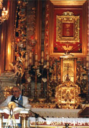
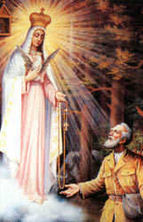

-
Austria
Mariazell
Mariazell, situated in the north of the Austrian province of Styria, is the most important sanctuary of the Madonna in Central Europe, and the religious center of Catholics in the Danube area. From the Benedictine convent of St. Lambrecht, the monk Magnus, brought a statue of Virgin Mary. He carved it in linden wood and erected a little cell to protect the statue. From this cell Mariazell derives its name.
Around the year 1200, Margrave Henry Vladislav of Moravia built the first church for the "Mater Gentium Slavorum" in gratitude for his recuperation from a serious disease. About 1370, King Louis the Great of Hungary dedicated a pilgrim's chapel to the Madonna, after his glorious victory over the Turks, which exists to this day. Mariazell and the "Magna Hungarorum Domina" thus, became the most important Hungarian pilgrimage center, as well. Like no other place, Mariazell up to this day maintained a very close relationship with the Catholics of Central and Eastern Europe. The history of pilgrimage to Mariazell is an integrated part of the history Christian Europe. The basilica, in its actual form standing in the midst of the splendid alpine landscape, is a 17th century masterwork of the famous Italian architect Domenico Sciassia. The high altar, a present from Emperor Charles VI, has been done according to plans of Johann B. Fischer von Erlach. The Altar of Grace, which Empress Maria Theresia endowed the splendid silver trellis, was designed by his son Emanuel. The greatest artists designed the magnificent interior decorations of the church and thus, created in this church one of the most important and beautiful religious baroque buildings. The "Magna Mater Austriae", Austria's great mother of God, today more than ever, is a symbol of living Christian belief. From 1975 to 1991 the famous Hungarian Cardinal Mindszenty was buried in the Basilica before he could be buried in his finally-liberated homeland. The most impressive recent event was without any doubt the pilgrimage of Pope John Paul II to Mariazell in September 1983. In 1996 the treasuries of the Church hosted the provincial exhibition. The reconstruction of both treasuries, the restoration of parts of the interior and the re-arrangement of the important collection of gifts of faith and gratitude were an important contribution of the festivities of "1000 years of Austria".
Basilica Mariazell
Holy Mass: Sundays and holidays: (7) 8, (9) 10, 11:15 AM and at 6:30 PM Weekdays: 8, 10, 11:15 AM and at 6:30 PM Rosary: Daily 6 PM with Benediction Processions with candles: Every Saturday and one day before the most important holidays at 8:30 PM Consecration of devotional objects: Daily at the full hour from 8 AM to noon and from 2 to 6 PM. Benediction of vehicles: Sundays and holidays at 2 PM Confessions: Daily from 8 AM to noon and from 6 to 7 PM
Prenotation of Holy Masses: In the northern sacristy or by telephone +43/3883/2595 Treasuries:Open Tuesday through Saturday: 10 AM till 3 PM Sundays and holydays: 11 AM till 3(4) PM Closed Monday Hospitality In the region of Mariazell numerous Inns, Restaurants, Cafe's are at the disposal of visitors, offering individuals and groups Austrian hospitality and Styrian specialties. Special inquiries for groups welcome.
Places of interestSome highlights of the numerous pastime activities: -Basilica Mariazell with "Magna Mater Austriae" and the famous treasuries. -Cable car to Burgeralpe (from the center of Mariazell) and the "Lumberjack-Country" -Museum of local history and mechanical nativity scene -Shopping in Mariazell's shops and devotional shops -Visit to a distillery, chandlery, bakery, and pottery -Museum Tramway to idyllic Lake Erlauf (Saturdays, Sundays and holidays Only *)
For further information contact: Basilica Mariazell (Superiorat), Kardinal Tisserant Platz 1, Monday-Saturday 8 AM-noon and 1-5 PM Tel: +43/3882/2595, Fax: +43/3882/2595-20 Tourist information of the region of Mariazell, Hauptplatz 13, A-8630 Mariazell Tel: +43/3882/2366, Fax: +43/3882/3945
-
Belgium
Our Lady of Banneux
In 1933 The Blessed Virgin Mary appeared to 11-year-old Mariette Beco; there as a glowing figure standing motionless dressed in a flowing white gown and veil with a brilliant blue sash. She was holding a rosary in her right hand, nodding and smiling at little Mariette. As Mariette began praying the rosary, the woman beckoned her to come forward. Three nights later Mariette went outside, knelt on the frozen ground and began praying the rosary in hopes that the lady would return. She appeared in the distant sky but gradually came closer until she was Only * a few feet away. Then she beckoned Mariette to come forward to a nearby spring and to "Plunge your hands into the water". Without hesitation the child immersed her hands in the spring. The lady spoke again "This spring is reserved for me". During the third apparition she announced, "I am the Virgin of the Poor" and said that the spring was "reserved for all nations, for the sick". With the fourth apparition she told the girl that she would like a little chapel built. She appeared 8 times; between the last apparition and the approval of the Church in 1949 many miracles occurred at Banneux. Also, the rosary has been recited every evening since 1933 without interruption. The Virgin Mary reaffirms her message, "Believe in me, and I will believe in you".
Located: 50 miles east-southeast of Brussels. Can be reached by car (From Brussels E40 Liege; E42 Verviers; From Luxembourg E25 north) bus; no train
Our Lady of Beauraing
Our Lady's appearances began on Nov. 29, 1932 to four young children. Frantically, the children ran home telling their parents about the vision. The Virgin, again, appeared the next day as they left the convent yard; again they were frightened. On the third day of apparitions several adults and parents accompanied the children to the convent yard determined to find out who was playing the prank. When the Blessed Mother appeared the children fell to their knees and began praying the rosary in unison. Only * they could see her. The Virgin was young, wore a brilliant white gown, and radiated a beautiful blue light. As she continued to appear over the next few nights, the crowds grew larger. On Dec. 4 she affirmed her title of "Immaculate Virgin" and when asked what she wanted she replied, "That you always be good". On Dec. 8 15, 000 pilgrims journeyed to Beauraing. On this day the Mother of God appeared even more beautiful and brilliant than before. In the next apparition the Blessed Virgin Mary asked for a chapel to be built. On the last day of the year she revealed her radiant heart to the children. The final apparition (33 times) took place on Jan 3 with 30,000 pilgrims present. Appearing to all the children except Fernande, the Virgin revealed three secrets. To two of the children, she promised to "convert sinners" To Andree Degeimbre she said, " I am the Mother of God, the Queen of Heaven, pray always". She then exposed her radiant heart one last time. Fernande was very saddened that the Virgin had not appeared to her. Suddenly, the Virgin Mary appeared before her and asked the kneeling child, "Do you love my son? Do you love me?" "Then sacrifice yourself for me". Departing, she gave the child a marvelous vision of her Immaculate Heart as it shone with light and love. Three of the seers are still living. Albert Voisin, and his sister, Gilberte are in Beauraing and Gilberte Degeimbre is in Italy.
-
Bosnia-Herzogovina
Medjugorje
On June 24, 1981 six teenagers encountered the Blessed Virgin on a hillside, saying she was a beautiful woman with dark hair and blue eyes who seemed about 25 years old. She wore gray and white, with a white veil. An arc of stars appeared above her head and her feet had clouds gathered around them. When the teenagers asked who she was, she replied, "I am the Blessed Virgin Mary". Approximately 15 million pilgrims have come from various parts of the world to witness the Blessed Virgin and hear her message. The six teenagers, Vica, Ivan, Jakov, Ivanka, Marija and Mirjana, continue to have visions of the Blessed Virgin. Visitations continue to occur daily in the Apparition Room of St. James Church. Her message is received by the visionaries and passed on or translated to several languages. Her basic message is: God is present in the world and that prayer and repentance are needed to obtain peace in Bosnia and the world. Despite unrest in Bosnia, officials maintain that travel to Medjugorje is safe. Many, many souvenir shops, fast food restaurants and varied accommodations.
-
England
Canterbury
In the year 597 Pope Gregory I sent the monk Augustine from Rome with a group of monks to evangelize the Anglo-Saxons in Canterbury. That same year King Ethelbert of Kent gave Augustine permission to preach. Although he was Only * there seven years when he died, his apostolate soon spread. Canterbury became important as the seat of the Roman Catholic Church in England by the time Archbishop Thomas Becket was appointed by King Henry II in 1162. King Henry II and Thomas Becket had a powerful relationship, but in time became at odds and Becket was forced into exile. Eventually, he and the King came to terms and Becket was allowed to return to Canterbury in 1170 - Only * to die for his convictions that same year. Becket's murder caused such an outrage that Henry had to forfeit his attempts to subjugate the church. His martyrdom was followed by reports of miraculous cures and within two years he was canonized. After Becket's canonization, the King was made to do penance by being flogged at the archbishop's coffin. When the cathedral was destroyed by fire, a much grander one was built to hold the Shrine of St. Thomas, which was financed by the pilgrimage groups traveling to Canterbury. Three centuries later King Henry VIII's complaints with the Vatican led to the Church of England being formed with Henry at it's head.
Canterbury, located on the River Stour, offers many historic treasures. This cathedral was built between the 12-14th centuries and its crypt is the largest in England. Canterbury is easily accessible by car or train and is a good starting point if visiting the English Channel coast and nearby towns.
Glastonbury
This was the first Christian settlement in England, founded by Joseph of Arimathea in the 1st century. It has been said that Joseph brought the Holy Grail - the chalice that Christ used at the Last Supper - here where it remains buried. Celtic monks inhabited here from the 5th century and Benedictine rule was instituted in the 8th century. The monastery complex was destroyed by fire in 1184, however, monks at Glastonbury made known that they found the tombs of Joseph of Arimathea and King Arthur. Pilgrims continued coming here resulting in the construction of England's largest and wealthiest monastery, the Glastonbury Abbey, which became famous for its tremendous library. The last Abbot was Richard Whiting whom King Henry VIII executed and whose head was impaled on a spike on the abbey gate and his body quartered and sent throughout the country as a warning to others of pocketing some of the abbey's material wealth. Glastonbury Abbey fell into destruction and Only * a portion of the Chapel of the Virgin remain. Legend says that King Arthur and his Knights of the Round Table are buried somewhere within and the chalice is hidden deep within.
Glastonbury is approximately a 3-hour drive from London. Hotels and inns and bed-and-breakfasts are plentiful.
Our Lady of Mt. Carmel
In 1251 Our Lady appeared to Simon Stock, the prior general of the Carmelite Order at Aylesford, England. In the apparition, the Virgin handed Simon the brown woolen scapular - which was her sign of protection for all her children. With the protection came the promise that whoever wore her "habit" devoutly would be assured eternal salvation. St. Claude La Colombiere declared, "No other devotion has been confirmed by so many extraordinary miracles than the Brown Scapular". Along with the rosary and the Miraculous Medal, the scapular is one of the chief Marian sacramentals. Popes, saints, kings, queens and many of the faithful have all worn their scapulars throughout the centuries. Blessed Pope Gregory X was buried wearing the scapular and when his tomb was opened 600 years after his death, his scapular was found intact. St. Alphonsus and St. John Bosco had very special devotions to Our Lady of Mt. Carmel; when they died both were buried wearing scapulars. Years later when their graves were opened, their bodies and sacred vestments were found reduced to ash and dust - except for the scapulars that were found intact. Wearing the scapular serves as a constant reminder of one's personal consecration to Mary and of the necessity of imitating her virtues. The scapular is Mary's special garment, a sign and guarantee of her motherly love and protection. Our Holy Father, Pope John Paul II, himself is a devoted follower of Our Lady of Mt. Carmel and wears a Brown Scapular.
Located: Aylesford is 20 miles east of London. Can be reached by car (A2/M2; A229 south (Maidstone); train (to West Malling then taxi to Aylesford); bus
St. Thomas Becket
The shrine of St. Thomas Becket in Canterbury Cathedral was one of the most popular places of pilgrimage in Christendom during the Middle Ages. So famous were these pilgrimages that it caught the attention of many writers and particularly Geoffrey Chaucer who wrote Canterbury Tales. St. Augustine brought Christianity to the region in 597 and began building a cathedral and working zealously for the propagation of the faith. Eventually he was consecrated as the first archbishop of Canterbury. On December 29, 1170, Thomas Becket was murdered in this cathedral by four men ordered by King Henry II. Before his martyrdom, Thomas had been a faithful servant and good friend of the king and for many years had served the king well as Chancellor of England. Soon after Thomas's appointment as archbishop of Canterbury in 1162, the king's attitude toward him changed. The king became angry with Thomas, who as archbishop began devoting his energy to the interests of the Church and began protecting it from the encroachments of the state. Thomas also began returning to the Church its lands and properties, which he considered to have been misappropriated by the state. This infuriated the king and eventually forced Thomas to take a self-imposed exile in France. After several years Thomas returned to England, temporarily reconciled with the king. However, before long tensions arose between the two and the king spoke his famous words, "Who will rid me of this troublesome priest?" That night four men rode into town and murdered the archbishop in the cathedral. King Henry II later knelt at the tomb of the saint and performed a public penance for the death of his great friend. Immediately after his death, the site of Thomas's martyrdom became a major place of pilgrimage. Many miracles were reported by those who visited his shrine. Less than 3 years after his death, he was Canonized by the Catholic Church. Pilgrimages lasted until the 16th century, when King Henry VIII destroyed the shrine and his relics. Today the cathedral serves as headquarters of the Anglican Church.
Located: 56 miles southeast of London. Can be reached by car, train or bus
Walsingham
In 1100 Richelde de Fervagues, wife of a local politician, dreamed that she was being transported to the house in Nazareth where the Virgin Mary received the Annunciation of Christ's birth. In the dream she was told to build a replica and did so. Soon afterward, the wooden house was moved about 200 feet very mysteriously. News spread and pilgrims arrived, including King Henry III and his son Edward I. A succession of monarchs followed, showing their devotion to the shrine. Soon Walsingham surpassed Canterbury in pilgrimage status. King Henry VIII and his wife, Catherine of Aragon made the pilgrimage, but soon after Henry's separation from the Roman Catholic Church, this shrine was destroyed, and the statue of the Virgin was taken to London where it was burned. This is a 3-4 hour drive from London with accommodations ranging from hotels to bed-and-breakfasts with varied prices.
Abbeys of St. Peter & St. Cecilia Benedictine Monks of Solesmes
For more than a century the Benedictine monks and nuns of Solesmes have been deeply involved in the research of Gregorian chant- named after Pope Gregory the Great (590-604). Along with the chant, the monks also do extensive research and writing on monastic traditions and papal teachings. The men's monastery was founded at Solesmes in 1010 but was closed during the French Revolution. In 1833 a Father Gueranger purchased the men's abbey (St. Peter's) and restored the monastery to a fully functioning house under the Benedictine Order. He did extensive research into Church history, liturgy, Gregorian chant, and Holy Scripture. During his lifetime, with the help of Mother Cecilia Bruyere, he also founded the women's monastery of St. Cecilia. Prayer and work is the Rule of St. Benedict that orders the lives of the monks and nuns. Every day they spend four or more hours in community prayer, one hour in personal prayer and the rest of the time performing manual labor, and studying. The monks and nuns of Solesmes have "preserved the use of the Latin Language and Gregorian Chant" in their liturgies, along with giving special attention to the visual aspects of the Mass with their vestments, ceremonial gestures and incense. After his death, the monks carried on the work of Fr. Gueranger and today they remain at the forefront of papal, monastic and Gregorian chant research.
Located: Solesmes is 145 miles southwest of Paris. Can be reached by car (A11 west from Paris); train; No bus.
-
France
Cathedral of Notre Dame
Completed in 1345 it has become world renowned for its architecture, size and history. The artwork is very detailed, with thousands of images represented by sculptures, stained-glass windows, and gargoyles. Many historical periods and biblical scenes are depicted in its art. The size of the church is also impressive - it can accommodate 6000 people during a religious ceremony. The cathedral is famous because it houses the Crown of Thorns and a piece of the True Cross (both are relics from Christ's Passion). In the northern tower of the cathedral, you can walk the 380 stairs to the top of the west facade of the building, from which you have a sweeping view of Paris.
Chartres
Pilgrims have traveled to Chartres for centuries, long before the present cathedral of Notre-Dame, built in the late 12th century. Notre-Dame de Chartres has inspired pilgrims by its enormous towers, which are visible from miles away. As early as 100 BC the Druids considered this place sacred and converted to Christianity approximately 45 AD. In 876, the Sacred Tunic, worn by the Blessed Virgin at time of Jesus's birth, was given to Chartres, by Emperor Charles II. Over time many pilgrims have flocked to see this holy relic. In 1194 the town was devastated by fire along with the cathedral; however, somehow the Sacred Tunic had been miraculously saved which inspired all to rebuild the cathedral. Contributions came from all over; people came from all over to work side- by-side on the new cathedral. By 1220 the present day cathedral was complete. During the French Revolution the Sacred Tunic was cut up and dispersed; however, part has been recovered. The cathedral is best known for its 12th & 13th century stained glass windows. The building, built in the Latin-cross-plan and inspired by the Abbey of Saint Denis in Paris, is 428 feet long, and its vault rises 118 feet. Chartres also draws pilgrims to its holy well that is the resting place of 1st century martyrs.
Chartres' population is about 30,000 and is 50 miles southwest of Paris. Hotels and restaurants are plentiful in varied price range.
La Sainte Chapelle (Holy Chapel)
La Sainte Chapelle was built to house the Crown of Thorns and a piece of the True Cross from Christ's Passion. King St. Louis IX ordered this chapel to be built; it has many stained-glass windows from the 13th century, making them some of the oldest in the city. (windows in other churches were destroyed during various wars) The relics are no longer within but now reside in the Cathedral of Notre Dame's treasury.
La Salette
In September 1846 two children, recruited as ranch hands near Corps, rested on a hill after lunch. After sleeping about half an hour Melanie suddenly awoke remembering the cows. Quickly Maximin and Melanie climbed the ravine finding the cows grazing peacefully. Suddenly Melanie noticed a light growing in brilliance with a woman seated with her head buried in her hands, crying. Frightened, Maximin said, "Hold on to your stick! I am keeping mine, and if it comes close I'm giving it a good whack!" As the two shepherds neared the figure, she rose and said, "Come near, my children, do not be afraid. I am here to tell you great news." The lady wore a long white dress, slippers decorated with gold buckles and roses, and a headdress capped with roses. The light emanating was brilliant but soft. She continued to weep and spoke about the loss of religion in the area, the desecration of the Sabbath and the profanity of her Son's name. After confiding different secrets to Manimin and Melanie, she began to speak with great hope of the good things to come if people amended their lives. She asked, "Do you say your prayers"? It is very important to do so at night and in the morning". She concluded with, "Well, children, you will make this message known to all my people." When they returned home Maximin immediately told his family about the beautiful lady. Upon hearing the story, their pious grandmother exclaimed, "It is the Virgin that the children have seen. She is the Only * one whose Son reigns in heaven!" When the parish priest heard of the event, he broke into tears. An hour later as he related the story in a sermon, his voice trembled. Many interrogated the children in hopes of trapping them into some contradiction. One May 1, 1852 the bishop of Grenoble published a decree announcing the construction of a shrine on the mountain of La Salette, as well as founding the religious order Missionaries of Our Lady of La Salette.
Located: Southeastern portion of France. 50 miles south of Grenoble. Can be reached by car (from Grenoble N85 south, from Gap N85 north); bus, no train.
Lourdes
Bernadette, the visionary child of Lourdes was born on January 7, 1844. On Feb. 11, 1858 Bernadette joined her sister, Toinette and friend Jeanne in search for firewood. As they arrived at and ready to cross a nearby river, Bernadette suddenly heard a "rustling sound of wind". Turning toward a grotto, Bernadette saw a young, lovely lady dressed in white. After rubbing her eyes in disbelief, Bernadette saw the woman beckon her forward. Immediately, Bernadette pulled out her rosary and knelt before the vision. When Toinette and Jeanne returned they found Bernadette on her knees; they had not seen the lady so she proceeded to tell them about her. Although promising them to secrecy, the entire town knew about the incident by nightfall. In the third apparition the lady spoke for the first time. The lady asked Bernadette to return for 15 days. She also said "I cannot promise you happiness in this world but Only * in the next". With each apparition the group of townspeople grew. Messages given were "Penance" and "Pray for the conversion of sinners". Soon a dirt-filled grotto began springing forth water. March 1 brought the first miracle - a woman, nine months pregnant, who had a paralyzed arm dipped her arm into the healing waters and immediately was healed. Next message was to "build a chapel and have people come in procession", and identified herself - "I am the Immaculate Conception". Since March 1, 1858 the Church has recognized 65 miracles at Lourdes and 5000 inexplicable healings have taken place. Almost every part of the shrine, including the grotto, is accessible to those in wheelchairs via ramps or special lifts. The Blessed Virgin appeared to her eighteen times. On Dec. 8, 1933 Bernadette was canonized.
Located: Foothills of the Pyrenees Mountains in southwestern France. Can be reached by car (A64 east; N117 southwest; N21 south); Train; bus
Mont Saint Michel
In the early 8th century the Archangel appeared in a vision to Bishop Aubert of Avranches and commanded him to build a chapel in his honor. What was once a rocky hill, the sea soon overcame it and the hill became an island. The bishop built a small circular oratory which soon attracted pilgrims. In 966 the Duke of Normandy, Richard I, built a Benedictine abbey that replaced the small oratory that Bishop Aubert built; in 1017 Richard II ordered construction of a Romanesque church. This took 60 years to complete; however, Abbot Hildebert II ordered that the 250-foot summit be demolished to build another church. It was finally completed in 1520 in elaborate Gothic and Romanesque style, and Maurists were given charge of the abbey in 1622 until the French Revolution. It was later used to imprison enemies of the crown until Emperor Napoleon III shut it down in 1863. In 1922 the monastery church was again a place of worship and monks have lived and worked on the Mont since. Mont-Saint-Michel has managed to withstand various battles - attacked during the Hundred Years War 1337-1453 and during the Invasion of Normandy in World War II. The Church of Saint Michael is located at the top, while crypts, great halls, a cloister, and monk's residence are elsewhere in the building. The base of the abbey is surrounded by the town, including inns, restaurants, and souvenir shops. Religious feast days are Folklore festival in May; St. Michael feast day Sunday closest to Sept. 29; Last week in July and Oct. 15
Located: 180 miles northwest of Paris. Can be reached by car (A11 & A81 west to Rennes, N175 Pontorson); train (Pontorson station); bus (STN #15 Pontorson)
Our Lady of Le Puy
One of the most ancient shrines dedicated to the Blessed Virgin Mary is here in LePuy. A 55- foot statue of Our Lady of France on a hill towering over the valley below will greet you. The tall, majestic figure of the Virgin Mary is standing atop a globe, her foot crushing the head of the serpent. She is crowned with 12 stars and is holding the Child Jesus in her arms while he extends his blessing to the world. LePuy is also home to a large Romanesque sanctuary of St. Michel where it rises from the rocks of another hill in the city as if it were part of a mountain. The Cathedral of LePuy lies in the valley between the two monuments. Inside the oriental-looking cathedral lies a beloved statue of the Virgin Mary. The image of the Black Madonna of LePuy is almost an exact replica of the ancient one that was dragged during a mock trial at the time of the French Revolution. Following the "conviction" of the statue, it was beheaded and burned at the stake. The present statue, 25 inches high and made of black marble is of Our Lady seated holding her Son on her knees. According to tradition, the original statue was brought to the sanctuary by St. Louis, the King of France. After the arrival of Christianity, it is said that a woman who suffered with a fever went up to the place of worship and the Blessed Virgin appeared to her and asked that a chapel be built on the site. Later when the bishop visited and outlined the area with a hedge of thorns, was astonished the next morning when the bushes had blossomed into flowers. After seeing the miracle he decided to have a chapel built. Toward the end of the 5th century another bishop of Velay was requested to erect a shrine. The church was built but never consecrated by the bishop because when he arrived found light and music filling the chapel and believed that the angels already consecrated it. By the 6th century, so many pilgrims were traveling to LePuy that a hospice had to be built. Charlemagne visited there twice; later St. Louis, the king of France, donated a new statue and journeyed twice with his queen. 17 kings of France plus a number of saints, including St. Dominic and St. Anthony of Padua also visited. No other shrine has received so many papal visits as Our Lady of Le Puy.
Located: 80 miles southwest of Lyon. Can be reached by car (from Paris head south via Nevers, Clermont-Ferrand & Lempdes; from Lyon head southwest); train; bus.
Our Lady of Pontmain
In 1871, as the Franco-Prussian War raged on and thousands of French people were losing their lives, a 12-year-old named Eugene Barbedette saw the image of a lady in the sky wearing a black veil, blue robe decorated with golden stars and a crown of gold. Eugene's brother, Joseph, saw the image next and then 2 more children. Adults who came to check on the commotion could see nothing. When the parish priest arrived, the children reported that a red cross began to appear on the Virgin's dress. The priest led the rosary and when they finished, the Lady unrolled a large white banner. Giving a message of prayer and hope, the scroll said, "Pray, my children, God will answer you in a short while. My Son will let himself be moved." The people of Pontmain rejoiced; but suddenly a large blood-red crucifix appeared in front of the Virgin with the words "Jesus Christ" written above it. The Lady became sad. After awhile the blood-red crucifix disappeared and the Virgin stretched out her arms to the children and smiled. Although Only * 4 children were blessed to see her, the town was overflowing with joy. The appearance of the Blessed Virgin Mary was a sign of peace to Pontmain and France. The following day the villagers learned that foreign troops had retreated believing that "A Madonna is guarding the country and forbidding us to advance". The Barbedette brothers later became priests. Our Lady of Prayer is now honored throughout the world.
Located: Pontmain is 180 miles west of Paris. Can be reached by car (from Paris N12 to Ernee, From Ernee D31 north to St. Mars); NO train, NO bus.
Our Lady of Rocamadour
In southern France, near Toulouse, is one of Christendom's earliest shrines. Legend says that the shrine began as a hermitage in a cave near the river Alzou and was founded in the first century by a man names Zaccheus of Jericho. It is believed that Zaccheus, who died in 70 A.D. knew and conversed with Jesus himself while he lived on earth. After the death of Zaccheus, his hermitage grew into a place of pilgrimage and later became one of the most celebrated shrines in Christendom. First, a miracle-working statue of the Blessed Virgin Mary was brought to the shrine and thousands of pilgrims who heard about the statue made the journey to Rocamadour to present their petitions to the Blessed Mother. The sanctuary also became well known for the long stairs- 216 steps - that led from the valley below. It is said that the pilgrims would climb these stairs on their knees. Popes and kings began granting special privileges to those who visited the sanctuary. Some of the more famous people that traveled there were St. Bernard, St. Dominic, St. Louis and King Louis XI. Charlemagne, on his way to battle the Moors in Spain, also visited the shrine. The shrine is built against the side of a cliff and offers a breathtaking view of the valley below. A giant staircase leads the visitor to the courtyard of the religious city, which is surrounded by seven churches and chapels. The Book of Miracles holds testimonies of favors granted to pilgrims, as well as countless other testimonies on the walls of the shrine. St. King Louis of France, Charlemagne and King Henry II of England are all believed to have climbed the 216 stairs on their knees.
Located: 110 miles north of Toulouse. Can be reached by car (N20 north from Toulouse to Payrac, D673 east; N20 south from Brive-la-Gaillarde to Payrac, D673 east); train; bus.
Our Lady of the Miraculous Medal and Our Lady of the Green Scapular
Although Paris is known for housing some of the world's greatest treasures, the city is spiritually richer than any financial magazine could calculate. At the Daughters of Charity Convent in Paris, the Blessed Virgin Mary revealed two of the greatest treasures of the world, the Miraculous Medal and the Green Scapular. These gifts from our heavenly mother were revealed to two nuns chosen to spread these devotions and graces throughout the world. The first treasure, the Miraculous Medal, was given to St. Catherine Laboure on July 18, 1830. The Virgin then told the young nun, "My child, the good God wishes to charge you with a mission. In a vision, Mary stood on a globe with her feet crushing a serpent. In her hands she held a small golden globe. In a second vision, rays of light came from Mary's hands and lit up the globe on which she was standing. As a circle in the shape of a medal formed around the vision, the letters were written, "O Mary, conceived without sin, pray for us who have recourse to thee". "Have a medal struck after this model. All who wear it will receive great graces; they should wear it around the neck. Graces will abound for those who wear it with confidence". The "Miraculous Medal", the name later attached to it, has earned the reputation of converting the hardest of hearts. One of the most famous conversions is that of Alphonse Ratisbonne, an agnostic Jew. Shortly after being persuaded to wear the Miraculous Medal by a friend, and after having a vision of the Blessed Virgin Mary, he experienced a complete and instantaneous conversion. The gift of the Green Scapular was revealed to the novice Justine Bisqueyburu on January 28, 1840 at the same convent where the revelation of the Miraculous Medal occurred. During her first retreat the young sister was favored with a celestial vision. Our Lady appeared to her and requested that the Daughters of Charity distribute the Green Scapular. This scapular would help contribute to the conversion of souls, especially unbelievers and obtain a happy death for them. Bearing a picture of the Blessed Virgin Mary on one side, the scapular shows an image of the Immaculate Heart pierced by a sword with the words of the Green Scapular Prayer encircling it. Between the two pictures is a piece of cloth, symbolizing the intercession of the Virgin Mary before the throne of God. The words printed on the scapular are "Immaculate Heart of Mary, pray for us now and at the hour of our death". An excellent English book about the Miraculous Medal and the apparitions is called The Message of Catherine Laboure, A Dynamic Force for Living! One of the greatest proponents and distributors of the Miraculous Medal was St. Maximilian Kolbe, an Auschwitz martyr who died in the place of a fellow Jewish prisoner.
Located: Paris
Sacre Coeur Basilica
One of most impressive churches in France is Sacre Coeur Basilica. Located on the top of Montmartre hill, the world-famous Byzantine structure offers a sweeping view of Paris. A funicular connects the bottom of Montmartre hill and the entrance to Sacre Coeur Basilica. The basilica rests on the site where the first bishop of Paris, St. Denis, was beheaded (it is said that he picked up his head and carried it 2 miles to the spot where the Abbey Church of St. Denis now stands).
Sacred Heart of Jesus and St. Margaret Mary Alacoque
Paray-le-Monial is home to the devotion of the Sacred Heart of Jesus. Here God chose St. Margaret Mary Alacoque to be the instrument that would lead the world back to Christ through his Sacred Heart. Margaret Mary joined the convent in June 1671 shortly before her 24th birthday and was to experience the joy of mystical union with the heart of Christ. On Dec. 27, 1673 St. Margaret Mary was kneeling alone before the Blessed Sacrament when Christ appeared for the first time. In His first revelation He said to her, "My Divine Heart is so full of love for all, and for you in particular, that it is unable to contain within itself the flames of its burning love. Its needs must be spread abroad by means of yourself, and so manifest itself to all to enrich them with the treasures this heart contains". Jesus then mourned the world's ingratitude, indifference, and coldness and asked Margaret Mary for a communion of reparation on the first Friday of each month. The Divine Heart was then exposed to her, "like a sun, ablaze with a dazzling light". In 1674 Jesus appeared again to St. Margaret Mary and in June 1675, the third and most famous apparition took place as Jesus exposed His Sacred heart again. "Behold this heart which has loved everyone so much that it has spared nothing, even to exhausting and consuming itself in order to testify its love". Christ then asked for the first Friday after the Octave of the Body and Blood of Christ to be set apart as a feast day in honor of his Sacred Heart. He also asked for a "solemn act of reparation" for all the offenses and indignities he had received in his sacrament of love, the Holy Eucharist. Aware that carrying out this mission alone would be difficult for the cloistered nun, Jesus sent a holy Jesuit priest to her. The Holy Mother of God solemnly affirmed St. Claude's role when she told St. Margaret Mary, "If it is given to the Daughters of the Visitation (St. Margaret Mary's order) to know and distribute the devotion to my Son's Sacred Heart, then it is reserved to the fathers of the Society of Jesus to show and make known its utility and value so that people may profit from it by receiving it with the respect and gratitude due to so great a benefit." By the time of St. Margaret Mary's death on October 17, 1690, the devotion was well established in her community and the surrounding areas. Today, devotion to the Sacred Heart is widespread.
Located: Southeastern portion of France - 60 miles northwest of Lyon. Can be reached by car (from Paris A6 south to Macon, N79 west; from Paris N7 south to Moulins, N79 east); train, or bus. Shrines of St. Bernadette (Nevers), St. John Vianney (Ars), and Our Lady of La Salette are in general locality.
St Therese of Lisieux
Pope Pius X described her as "the greatest saint of modern times". St. Therese's writings have captured the hearts of million. The Story of a Soul, her spiritual autobiography, made her world famous. Therese came from a devout and well-to-do family and was the youngest of nine children. At the age of four she suffered the loss of her mother - which affected her deeply. During the following ten years she grew inseparable from Pauline, her older sister. When her sister, Pauline left home to enter the Carmelite convent, Therese fell mysteriously ill. On May 13, 1883 while praying a nine-day novena before the family's statue of the Blessed Virgin Mary, Therese fell into a deep ecstasy. After a vision in which the Virgin smiled at her, little Therese was cured. A profound conversion took place in the life of the saint on Christmas day 1886 and her shyness and seriousness washed away in an instant; she had received strength and peace to last her life. With her conversion at the age of fourteen, she felt ready to enter the Carmelite order. As the Rule of Carmel allowed Only * those twenty-one and older to enter, Therese would need a special dispensation from the bishop. Throughout her life as a nun, she lived the faith of Christ in a most extraordinary way. She declared "I came to Carmel to save souls and to pray for priests". After suffering from tuberculosis for several years, she gave up her soul on September 30, 1897 delcaring in her last moments "I do not regret having given myself to Love". The figure of St. Therese of Lisieux in the Carmelite Convent Chapel is not her body but a waxen replica of it. Her earthly remains lie beneath the statue. St. Therese once confided to a sister that, after her death, she would send down a shower of roses; and she has kept her promise. It is well known that when a prayer is answered through her intercession, one will receive roses.
Located: Lisieux is about one hundred miles northwest of Paris. Can be reached by train (St. Lazare station), car (A13 or N13), bus.
St. Anne Feastday: July 26
The people of French Brittany have always had a great devotion to St. Anne, the Blessed Virgin Mary's mother. It has been told that the parents of the Virgin Mary were childless into their old age until an angel appeared to St. Anne and said, "The Lord has looked upon your tears; you shall conceive and give birth and the fruit of your womb shall be blessed by all the world." The child of this promise was the Blessed Virgin Mary. Early in the seventeenth century, pilgrimages to the area began after St. Anne appeared several times to a simple laborer, Yves Nicolazic. The saint asked him to rebuild the ancient chapel that once stood in the city. Apparitions became frequent and eventually the bishop commissioned a chapel to be built. Anne of Austria and Louis XIII enriched the sanctuary with many gifts, among them a relic of St. Anne brought from Jerusalem in the 13th century. Even the French Revolution could put a stop to the great number of pilgrims visiting the shrine. However, during this time the chapel was ransacked, Carmelites were driven out and the miraculous statue of St. Anne was burned. Today, the shrine continues to attract pilgrims from all over; many come for "pardons" in which pilgrims climb the Scala Santa (Holy Stairs) on their knees. July 26th is the day of the "great pardon".
Located: 285 miles west of Paris. Can be reached by car (west from Paris to Rennes via Chartres and Le Mans. Southwest from Rennes to Auray via N24, N166 and N165); train; bus.
St. Bernadette Soubirous
Bernadette was born on Jan. 7, 1844 in Lourdes. In 1854 an epidemic of cholera left Bernadette with a painful asthma condition that lasted the rest of her life. Two years later poverty struck the family. In Jan. 1858 the Blessed Virgin Mary appeared to Bernadette at the grotto of Massabielle for a total of 18 times. As word spread of Blessed Virgin's appearance, the investigations began. Throughout the apparitions the faithful flocked to the grotto. Finally, in 1862 the bishop acknowledged the authenticity of the apparitions. After Bernadette joined the Sisters of Charity in Nevers, France July 4, 1866 she never spoke of the grotto unless ordered to by her superiors. Taking the religious name, Marie-Bernard, she suffered from recurring bouts of sickness and ill health. One of her religious sisters described has as being deeply pious and possessing childlike simplicity, extraordinary evenness of temper and profound humility. Other sisters recalled Bernadette's youthful charm, spontaneous disposition and playful attitude. However, Sister Marie-Bernard was being led by Jesus to live a crucified life of prayer, suffering, silence and sacrifice. The little child of Lourdes accepted her life with perfect resignation and submission. Suffering from asthma and tuberculosis, she spent the last 24 hours of her life in terrible agony. Her last day was April 16, 1879 - it was just after three o'clock, the same time Christ had died. In agony she stretched out her arms like the crucified Jesus and whispered, "I am thirsty." Sister Marie-Bernard then made for the lat time her majestic sign of the cross that she learned from the Blessed Virgin at Massabielle. With no strength left, her head bowed to the right, she gently gave her soul back to God. Hands clasping a crucifix as two tears rolled down her cheeks. In 1925 her body was ceremoniously transferred her body to the chapel of St. Gildard, where it now rests in a glass reliquary. Her body has remained intact and Only * a thin layer of way has been added to her face and hands. On Dec. 8, 1933 the Catholic Church canonized Bernadette. During this time examiners had exhumed her body on 3 different occasions and each time found it incorrupt.
Located: 130 miles south of Paris. Can be reached by car (N7 south); train; bus (local)
St. John Vianney
Jean-Marie Vianney was born in the small village of Dardilly, France in 1786. As a young boy he had a deep love and understanding of God and would often instruct other children in the Christian faith. Although he had very little schooling, he entered seminary at the age of 20. Because of minimal education, he had much difficulty with Latin and philosophy, however, through perseverance and providence, he was finally ordained a priest. He was then sent to a small parish in Ars, France, where he remained for the rest of his life. His powerful sermons and personal example of holiness brought the unfaithful back to God. All of France spoke of "The holy man in Ars; go and see him". St. John Vianney, known as the Cure of Ars, received many supernatural gifts from the Lord. Reading souls in the confessional, predicting events, and performing miracles were a few reasons that pilgrims from all over France flocked to Ars to see him. From 1830-1845 an average of 300 people visited Ars daily. In 1858-59 more than 100,000 pilgrims traveled to Ars. To accommodate the pilgrims, St. John Vianney slept Only * two hours a night. He lived a simple life, eating little, wearing old clothing and sleeping on a hard bed. Because he was extremely holy Satan attacked him ferociously. Much diabolical activity in his life was extensive. In fact, the devil set his bed afire! He faced many trials in his lifetime; and gave up his soul to God on Aug. 4, 1859. The Church has proclaimed him patron saint of parish priests.
Located: Southeastern portion of France - 250 miles south of Paris and 18 miles north of Lyon. Can be reached by car (A6 & D904); bus - local bus from Villefranche-sur-Saone. No train.
St. Louis de Montfort
Louis Marie Grignion was born January 31, 1673 in the small village of Montfort, France. He discovered early in his life that devoting himself to the Blessed Virgin was the surest way to reach Jesus and practice his faith. Although his hope was to do missionary work in foreign missions, he was assigned to remain in France. Louis was inspired to carry out his missionary work with apostolic zeal and became a vagabond preacher, traveling many miles on foot throughout his lifetime to become one of the greatest missionaries of the Church. He wrote several books - True Devotion to the Blessed Virgin Mary, The Secret of the Rosary, and Preparation for Total Consecration. Early in his Christian walk he was reprimanded by priests and other influential people for his outspoken condemnation and firm opposition to erroneous doctrines of his day and was asked to leave several dioceses during his travels. Questioning the path on which God had set him, Louis de Montfort decided to walk to Rome to speak with Pope Clement XI. The Holy Father encouraged him in his missionary work and endowed him with the title "apostolic missionary". He returned to France to continue to serve the sick, poor, disabled and illiterate. In 1947 Louis Marie de Montfor was canonized a saint. Three religious orders have developed from the fruits of his work: the Montfort Missionaries, the Daughters of Wisdom, and the Brothers of St. Gabriel. In the small village of St. Lourent-sur-Sevre, near Cholet, lies his shrine and tomb and near the basilica is the home of the Montfort Missionaries. For more information on St. Louis de Montfort, his Marian spirituality and his writings, contact Montfort Publications, Bay Shore, NY 11706. Louis de Montfort predicted that his book True Devotion to Mary would one day be discovered in a buried chest; this proved to be true when it was found in 1842 after it had been hidden away during the French Revolution.
Located: St. Lourent-sur-Sevre is 230 miles southwest of Paris. Can be reached by car (Paris A11 west to Angers, N160 south to Cholet, D752 south); No train; No bus.
St. Mary Magdalene Feastday: July 22
After the death of Christ, when the great era of Christian evangelization began, so did the persecutions. Those who had known Jesus personally during his lifetime were singled out as special victims of severe abuse, torture, and murder. Mary Magdalene, her brother, Lazarus, her sister Martha, the holy women Mary-Jacob and Salome and Maximin along with 72 disciples were put on a boat without sails or oars and pushed out to sea to die. The Lord guided them to the mouth of the Rhone where they dispersed into the local province, spreading the Good News. Mary Magdalene and Lazarus journeyed to Marseille, where they evangelized the local inhabitants. A few years later Mary Magdalene settled in a cave in the mountains of Ste. Baume to spend the last years of her life. Unbeknown to her at first, superstition and pagan worship pervaded this area known for its mysterious grotto and sacred forests. In prayer, penance, and reparation Mary Magdalene worked to fight off the evil spirits and demons that enslaved the souls of those living there. She sought to Christianize the mountains with the Presence of the One whom had risen from the dead just a few years earlier. She planted a cross in the ground to symbolize the One True God. The shrine of St. Mary Magdalene receives more than two hundred thousand pilgrims annually. The grotto of St. Mary Magdalene is among the most spectacular in its natural beauty and grandeur with a commanding view of the Mediterranean Sea. Mary Magdalene died around the year 75 A.D. and is buried at St. Maximin in a crypt.
Located: Le Plan d'Aups-Sainte Baume is twenty-five miles northeast from Marseille. Can be reached by bus (Nans-les-Pins), train (to Marseille), taxi (Le Plan d'Aups-Sainte Baume)
St. Vincent de Paul
A seventeenth -century champion of the poor, St. Vincent de Paul devoted his whole life to serving the needs of the less fortunate. His name and missionary work have spread to the far corners of the earth. Born on April 24, 1581 Vincent de Paul was ordained a priest in the year 1600. At the time he had great ambitions to live with all the comforts of a modern life. During his early years as a priest he worked as a chaplain for Queen Margaret de Valois and served as a tutor to the powerful de Gondi family and the income he received allowed him to live very comfortably. While ministering to the de Gondis family, Vincent began noticing the great inequities between the rich and the poor. In 1617 Vincent established the first "Confraternity of Charity" - both the order and the confraternity had missions of serving the poor and he became well known throughout Europe as his missionaries traveled from Ireland to North Africa and France to Poland. Twenty-five of his houses were established during his lifetime. The body of St.Vincent de Paul resides in a chapel in the motherhouse of the Congregation of the Mission in downtown Paris at 95, rue de Sevres.
Located: Paris
-
Germany
Cologne & Aachen
These two cities located in West Germany were devastated in World War II; however, their prominent cathedrals survived. Cologne was settled by the Romans in 38 BC, and the Roman Emperor Claudius made it a Roman capital naming it in honor of his wife, Colonia Claudia Ara Agrippinesis in 50 AD. It was the Holy Roman Empire's largest and richest city from the 11th to 16th centuries. It gained importance in 1194 after it acquired the relics of the Three Magi, the Wise Men who brought gifts the infant Jesus. Needing a home worthy of their importance, work began in 1248 on the Kolner Dom, a magnificent Gothic cathedral, where the relics remain today. At the time this cathedral was built, the Kolner Dom's twin west towers, at 515 feet, were the tallest structures in the world. Cologne is known for eau de cologne, the toilet water/perfume first produced there in the 18th century, as well as its many restaurants, bars, shops, museums, and Romanesque churches.
Hundreds of pilgrims traveled to Aachen from central Europe in the Middle Ages primarily because of the many holy relics there since the time of Charlemagne. The most important relics are the swaddling clothes of Christ, the loincloth of Christ, the cloth from John the Baptist's head and the Blessed Virgin's cloak. These are housed in an eight-sided chapel Charlemagne built as the core of Aachen's cathedral. Also, within is a 14th century statue of the Virgin that is said to be miraculous. While Charlemagne was crowned Holy Roman Emperor in Rome in 800, there have been 32 Holy Roman Emperors crowned at Aachen and with each coronation another magnificent gift given to the cathedral. There is a richly decorated golden shrine that holds the remains of Charlemagne given by Frederick II. Charlemagne's marble throne is also housed there. Cologne and Aachen are approximately 45 miles apart and two of the primary cities of Germany. It is also known by its French name - Aix-la-Chapelle. Hot springs are still there which many people claim are capable of curing various ailments. Again, many museums are there.
Hotel accommodations, restaurants and transportation are varied and accessible.
Eucharistic Miracle of Walldurn
In 1330 while the priest, Heinrich Otto was celebrating Mass he accidentally knocked over the chalice containing the blood of Christ. As the blood spilled across the corporal, an image of the crucified Christ with eleven surrounding thorn-crowned heads appeared on the cloth. He quickly hid the piece of linen under the altar and not until Mass was over did he take a closer look at the corporal. Re-examining the corporal, Fr. Otto noticed that the images made visible by the blood had become decidedly sharp and clear; he, again, hid the linen under the altar. Not until a few days before his death did he reveal the event. Upon his deathbed he confessed the secret and the Miraculous Corporal was immediately found and enshrined. Word of the bloodstained linen spread quickly throughout the nearby villages and soon thousands of pilgrims traveled to see the Holy Corporal. Miracles, healings and conversions were numerous among those who visited. In 1445 Pope Eugene IV recognized the Eucharistic Miracle as authentic; Just three years earlier he had confirmed another Eucharistic miracle in Ferrara, Italy. Walldurn is a small town situated near Frankfurt, Wurzburg, Heidelberg, and Heilbronn, Germany. The major pilgrimage period for the shrine lasts 4 weeks beginning on Trinity Sunday and is known as the "Pilgrimage to the Holy Blood".
Located: 50 miles southeast of Frankfurt. Can be reached by car (from Frankfurt A3 east then 469 south; from Wurzburg 27 southwest); train; bus
Munich and Bavaria
Munich or 'home of the monks' is Germany's third-largest city and one of its most appealing. This region is rich in shrines and churches and many are architectural masterpieces. Munich is a center of art, music, business, and its annual beer festival, Oktoberfest. Bavaria has always been a religious community and continues to be primarily Roman Catholic. The 11th century produced three princes who became popes: Clement II, Damasus II and Victor II. Frauenkirche (Church of Our Lady) has two onion-domed steeples. The cathedral houses its architect, Jorg von Polling, as well as several early rulers of Bavaria. Asamkirche is also known as Church of Saint Johannus Nepomuk but is actually named for its builders - brothers named Cosmas and Egid Asam. It is a small church that is attached to Asam's house which houses in a glass case the skeleton of the saint that it was named for, a 14th century Bohemian monk. Andechs, is a hilltop Benedictine monastery and one of the most popular shrines in Bavaria. It houses religious relics brought from the Holy Land 1000 years ago.
Oberammergau, famous for the Passion play, Alotting is located 45 miles east of Munich wherein the Chapel of Mercy houses a 13th century statue of the Blessed Virgin that is credited with many miraculous cures. It also houses several silver urns containing the hearts of several monarchs of the Kingdom of Bavaria.
Munich is easily accessible by car, train, air; accommodations and restaurants are varied and plentiful.
Oberammergau
Oberammergau is known for its wood-carvers and especially, for its carved Christmas creches; many houses in the village are elaborately frescoed. Oberammergau is a typical Bavarian alpine village close to Innsbruck, Garmisch-Partenkirchen and Zugspitze. Bavaria is rich in religious history but well known for its Passion Play that is staged once every ten years which is a portrayal in 16 acts of the final days of Christ's life. In 1632, the Bubonic plague or Black Death was rampant in Europe. In time it reached Oberammergau and 10 % of the population was taken. Fearful, the Catholic people of this town promised that if their village could be spared, they would sacrifice a year every decade to re-enact the final days of Christ. This promise was extended to their descendants. Originally, it was necessary for the players to be natives of Oberammergau; presently, it is still necessary to have lived there at least 20 years. All are amateurs who devote themselves full time in these roles. Nearly half of the population (2,000) are actively involved in the production. Nearby in Ettal is the Benedictine monastery and the castle of King Ludwig II at Schloss Linderhof.
Oberammergau is easily accessible by car or train. Accommodations and restaurants of all classes are available.
-
Israel
-
Ireland
Knock
On August 21, 1879 14 people witnessed an apparition of the Blessed Virgin, Saint Joseph, and Saint John on their parish church outer wall. While it was pouring rain on them, the apparition remained dry. The Virgin was dressed in a white cloak and wore a golden crown. Immediately the small parish church became a place of pilgrimage and soon drew people from neighboring towns and then all of Ireland. A huge basilica opened in 1976 and over 200 visions have been reported of the Blessed Virgin. Knock is numbered among the dozen apparition sites to receive canonical sanction. The town has been transformed from a quiet village to a bustling town with souvenir shops, parking lots, business facilities and a major airport.
Accessible to car, bus and plane. Accommodations are varied from luxury hotels to farm bed-and-breakfasts, including various restaurants and pubs.
Our Lady of Knock Feastday: August 21
In Knock we join Mary in a spirit of unity and prayer. Here, the Mother of Christ appeared in prayerful contemplation with St. Joseph and St. John the Evangelist. This apparition took place on August 21, 1879 - Margaret Byrn saw an unusually bright light near the church after locking it up. Mary McLoughlin also noticed a bright light, as well as some "statues" up against a wall as she passed by the church to visit a friend. After her visit to the Beirnes, Mary McLoughlin was walking home with Mary Beirne when Mary Beirne noticed a bright light and some "statues" leaning against the building. "Those statues are moving...it is the Blessed Virgin Mary!" Immediately, she ran home to inform her family of the incredible news. Word traveled through town. They all saw the heavenly vision. Three figures were bathed in a beautiful light. The Mother of God was clad in a white robe with a brilliant gold crown on her head. Her hands were raised toward heaven in prayer. On her left was St. John the Evangelist. He was dressed like a bishop and was holding open a book, while his right hand was raised in the air as if preaching. On the Blessed Mother's right was St. Joseph. He was standing in a humble stature with his hands joined together and shoulders bent toward Our Lady. All the figures were slightly above the ground with Mary slightly higher than the other two. To the left of St. John stood an altar with a lamb on it facing the figures and behind the lamb was a cross. The vision lasted for two hours with 15 witnesses ranging in age from 6 to 70 years old. Soon thousands of pilgrims were journeying to Knock where many miracles and cures were reported. The story of Knock consists of Only * one apparition. However, Our Lady of Knock shrine, along with Lourdes, is one of the most important places of pilgrimage for the sick and handicapped. During the early years after the apparition, people left their crutches hanging on a wall as a sign of their healing.
Located: Knock is 35 miles north of Galway. Can be reached by car (from Galway N17 north or N17 south from Sligo; from Dublin N4 west then N63 to Roscommon and N60 west Claremorris); bus and air (Knock International Airport); No train.
St. Patrick's Holy Mountain
The holy mountain of Croagh Patrick lies 2500 feet above sea level in northwestern Ireland. Tradition says that St. Patrick fasted and prayed for 40 days and nights in 441. However, before Christianity came to Ireland, the people in the area worshiped the pagan god Hugh on the top of Croagh Patrick, but when St. Patrick arrived at the summit he banished all demons and snakes from the mountain. From then on, the site became a place of Christian worship and it is believed that the first church was built on the summit sometime around the year 824. Every year on the last Sunday of July, thousands of pilgrims assemble and "following in the footsteps" of previous generations, many pilgrims climb the rocky slopes barefoot as an act of prayer and reparation. To climb St. Patrick's Holy Mountain is to be a true pilgrim. The journey upward involves prayer, penance, and self-denial. The journey to the top includes three traditional stations where pilgrims say designated prayers and perform short spiritual exercises. Near the entrance is a statue of St. Patrick welcoming the pilgrims; the first station is found partway up the mountain; the second station is at the summit; the third station is located on the Lecanvey side on the descent. The climb up and down the mountain takes one and a half to two hours each way. Croagh Patrick Mountain has gold in it; however, because of the religious significance of the mountain, the Irish government has banned all mining operations.
Located: 50 miles north-northwest of Galway. Can be reached by car (village of Murrisk 6 miles west of Westport R335; from Dublin N4); train to Westport, then bus; bus.
St. Patrick's Purgatory
The first writings of St. Patrick's Purgatory, or Lough Derg, go back to the 784 A.D. Annals of Ireland. The shrine is located on a remote island on Lough (lake) Derg in county Donegal in northwestern Ireland. Prayer, conversion and reparation remain the major themes; during a typical three-day pilgrimage to the isolated island, pilgrims fast from all foods and liquids, except water, from midnight to the afternoon of arrival at Lough Derg. After arrival, the pilgrim will continue the fast for the remainder of the three-day period, except for one light meal daily consisting of bread, water, tea and coffee. Upon reaching the island by boat, pilgrims remove all footwear and remain barefoot during the entire stay. The first night consists of a "sleep fast" - pilgrims spend the night performing various stations in or near the basilica. These stations consist of prayers, meditations, and spiritual exercises. Pilgrims are allowed to sleep during the second night. The three days are spent mostly in quiet prayer (but not mandatory), with continuous walking, standing, and kneeling at various assigned stations or penitential "beds". One station would include visiting the Blessed Sacrament in St. Patrick's Basilica, then going to St. Brigid's Cross near the outer part of the basilica, walking over rough stones around the "bed" while reciting the rosary, then repeating the process on one's knees, and then with arms outstretched saying three times, "I renounce the world, the flesh and the devil". Why would one go to St. Patrick's Purgatory? For some, it is a place of solitude; others, a place of thanksgiving for a favor received; others, it is a place for reparation for past sins. Lough Derg is a challenge to the body and soul and often pilgrims leave with a renewed vigor to live the gospel of Jesus Christ.
Located: Northwestern Ireland near Pettigo. Can be reached by car (from Dublin N3 to Cavan Town and Butler's Bridge, then N54 Monaghan; from Belfast M1 and A4 to Ballygawley, A5 to Omagh, A35 to Pettigo; train to Sligo then coach; bus. Not open from November until April.
-
Italy
Rome's Basilicas and Shrines
Emperor Constantine recognized Christianity as a religion and ordered the construction of churches and basilicas throughout Rome beginning in the 4th century. In 330 he ordered St. Peter's Basilica to be built on Vatican Hill and with freedom to practice faith openly, Christian pilgrims from all social levels, traveled to Rome and began praying at the tombs of Peter and Paul. Today, there are more than 50 major basilicas and churches.
The following are a few of the major basilicas and churches: Basilica of St. John Lateran Basilica of St. Mary Major Basilica of St. Paul Outside the Walls Basilica of St. Lawrence Outside the Walls Basilica of the Holy Cross in Jerusalem Basilica of St. Sebastian Basilica of S. Maria in Aracoeli Basilica of St. Peter in Chains Basilica of St. Mary Sopra Minerva Church of Saint Alphonsus, Our Lady of Perpetual Help Church of the Holy Name of Jesus Church of St. Praxedes Sanctuary of the Holy Stairs
For listing of convents and houses for pilgrim lodgings write to: Opera Romana Pellegrinaggi Via della Pigna, 13/a 00186 Rome Tel (06) 69.501 Fax (06) 699.407.17
The Pilgrim's Guide to Rome's Principal Churches by Joseph N. Tylenda is an excellent reference book.
Bari and Apulia
Bari was established in the 4th century with much history to follow - after the fall of the Roman Empire it went from Ostrogoths, to Lombards, then Moslems, then Byzantines, then Normans in 1071. Later, was under control by Aragon, Spain, the Hapsburgs and the Bourbons. The Basilica di San Nicola in Bari was Only * remaining building after wars. Places of pilgrimage include Monte Sant'Angeloo and San Giovanni Rotondo. St. Nicholas of Myra in Lycia (now part of Turkey) Because of his zeal and holiness soon became bishop, but was imprisoned during the reign of Diocletian. He was originally entombed in his cathedral at Myra, but in 1087 Italian soldiers removed Saint Nicholas's body and transported it to Bari where was enshrined in the presence of Pope Urban II. His year of death varies from 345 to 352 He is patron of children, scholars, and sailors. Saint Nicholas has had many legends involving the giving of gifts, thus, the Santa Claus connection.
Bari is accessible by train. Apulia, is at the top of the heel of the "boot" of Italy, where Monte Sant' Angelo and San Giovanni Rotondo draws pilgrims. It also offers some of Italy's best beaches and its fine cuisine. Hotels & inns are many, yet inexpensive.
Basilica of St. John Lateran
This cathedral is the true seat of the bishop of Rome (the pope). From the 4 through 14 centuries it was the home and residence of all the popes, until they moved to Avignon, France. Returning to Rome in 1377, the popes made 'Vatican City' their new home. Between the 12 and 16th centuries five ecumenical councils were held in the cathedral. The artwork at St. John Lateran is breathtaking. In the baptistery are the remains of Sts. Cyprian, Giustina, Rufina and Secunda.
Basilica of St. Lawrence Outside the Walls
Dedicated to St. Lawrence, the deacon and martyr. Near the center of the basilica are the relics of St. Lawrence, St. Justin and St. Stephen in a large sarcophagus. St. Stephen is known as the first Christian martyr in history; he was stoned to death at Jerusalem. St. Justin lays claim to being the first Christian to have written on Christianity. He was scourged and beheaded along with 6 companions. St. Lawrence was ordered to turn over the riches of the Church to the empire. He gathered the poor of Rome and presented them as the riches of the Church. Incensed by this mockery, the prefect had Lawrence burned alive on a gridiron. He is the patron saint of cooks!
Basilica of St. Mary Major
This is one of the oldest and most important shrines in the world dedicated to the Blessed Virgin Mary. Positioned on the highest of Seven Hills in Rome, the basilica houses two of Christianity's greatest treasures: the relics of the Manger from Bethlehem in which the baby Jesus rested; and a painting of the Blessed Virgin Mary from the 5th century, 'The Salvation of the Roman People'. For centuries the Roman population has gathered before the portrait to pray during times of war, disease, and persecution. The church that was originally on this site was built in response to a request from the Blessed Virgin Mary. During the night of August 4, 358 the Virgin appeared to Pope Liberius (352-366) and the Roman patrician Giovanni in their dreams, requesting a church to be built in her honor. She said that a miraculous snowfall would come down and outline the place where the church was to be constructed. The next day, in the middle of a summer heat wave, snow fell on the Esquiline Hill. In response, Pope Liberious immediately commissioned the church to be built, and although nothing remains today of the original basilica, the event gave the Blessed Virgin one of her most ancient titles, Our Lady of the Snows.
Basilica of St. Mary Sopra Minerva
Beneath the main altar lies the body of St. Catherine of Siena. Atop the sarcophagus is a statue of the reclining saint; and near the altar is an entrance to the room where St. Catherine lived. While her main relics are here, her incorrupt head is located in Siena at the Basilica of St. Domenico.
Basilica of St. Paul Outside the Walls
This is the second largest church in Rome after St. Peter's, wherein it houses the tomb of St. Paul under the main altar. It also houses the chains that once bound the apostle while he was a prisoner in Rome.
Basilica of St. Peter in Chains
Eudocia, wife of Theodosius II (emperor 408-450), received the chains that once bound St. Peter as a gift; later she sent one of the chains to Rome so that a basilica would be built to house them. Eventually, the chains were given to Pope Sixtus III (432-440) and when the pope placed them next to the chain that once bound Peter in Mammertime Prison, both chains were miraculously fused into one inseparable link.
Clare and the Second Order
St. Clare, also born to a well-to-do Assisi family, became a devoted follower of Francis in 1211 after hearing his Lenten message. They shared each other's desire to give fully to a life of contemplation. On March 18, 1212, the 18-year old Clare and a close friend secretly went to the Portiuncula, a small chapel, where Francis and his friars dressed her in the Franciscan robe, cut her hair to consecrate her to a life of penance and thus, formed what is known as Francis's Second Order. The first sister to join the order was Pacifica di Guelfuccio, Clare's friend. Soon after, Clare's sisters Agnes and Beatrice and their mother, Ortolana joined the order. The order was initially called the Poor Women of Saint Damian's. In 1215 Pope Innocent III granted Clare the privilege of taking the vow of poverty - forbidden to hold property of any kind and "...content to serve the Lord in poverty and humility". She died in 1253 and was canonized two years later. Her feast day is August 11 and intercession is sought in cases of eye disease and in childbirth.
Assisi's Shrines The Basilica of San Francesco, which enshrines Saint Francis's remains, is one of Italy's most famous monuments. Unfortunately, parts of the fresco cycle by Giotto fell in the earthquakes and were shattered but restorers are working diligently. The 13th century Basilica of Santa Chiara contains Saint Clare's remains, and the crucifix that spoke to Francis and led him to a religious life. The Basilica of Santa Maria degli Angeli is a huge baroque structure enclosing the Portiuncula, the little chapel restored by Francis that became central to the formation of his order; years later the place of his death. The Hermitage of the Carceri is two miles from Assisi and is a monastery where Francis and his followers first lived.
Eucharistic Miracle of Cascia
Another precious relic in the Basilica of St. Rita is the Eucharistic Miracle of Cascia and has a story of its own. In 1330 a dying farmer called for a priest. In his eagerness to respond to the call, the priest quickly grabbed a consecrated host from the tabernacle and lodged it in his breviary rather than putting it into a pyx. When the priest opened his breviary he found a bleeding host and the pages were stained with blood. Closing the book quickly and feeling fear and remorse, he returned to Siena. Immediately he confessed the bloodstained pages and host to Blessed Simone Fidati. After absolving the priest of his sin, Blessed Simone retained the breviary for further investigation. As with all Eucharistic miracles, numerous tests were conducted on the relic. It was later discovered that when the bloodstained breviary page was viewed through a weak microscope or held up against the light, the image of a sad bearded man appeared. The image is also visible in photographs. Today the relic resides in a stone crystal tabernacle of the basilica.
Located: Cascia is 60 miles north of Rome. Can be reached by car and bus. No train.
Eucharistic Miracle of Lanciano
From time to time God has provided visible miracles in this sacrament of love to help the Doubting Thomases of the world. The Eucharistic Miracle of Lanciano took place during the 8th century when a Basilian monk was saying Mass. Moments after the consecration, the priest, who had been doubting the Real Presence of Our Lord in the Eucharist, found himself holding a host that had changed into flesh. The wine had changed into blood, clotted up and split into five pieces of different shapes and sizes. The humbled priest raised his head and revealed the event to his parishioners. When the news spread, the faithful came from everywhere to behold the miracle. Twelve centuries later, the sacred relics have remained incorrupt. The flesh has retained the dimensions of the original host and the blood has remained coagulated. The Eucharistic Miracle of Lanciano has been subjected to numerous scientific tests, and the latest conducted in 1970-71 has confirmed that "the flesh is real flesh and the blood is real blood". The Eucharistic Miracle of Lanciano is myocardium (muscular heart tissue), blood type AB. There are no preservatives of any kind, yet the species are incorrupt, despite 1200 years of exposure to the atmosphere and to various investigations. As Louis Pasteur once said, "A little bit of science averts people from God, a lot of it, takes us back to Him". The miracle defies all human explanation.
Located: Lanciano is 100 miles east of Rome. Can be reached by car (from Bologna A14 south, from Foggia A14 north, from Rome west to PesLiz); train; bus.
Eucharistic Miracle of Orvieto
In 1263 a Bohemian priest, who did not believe in the transubstantiation of the body and blood of Jesus Christ in the host and wine, went on a pilgrimage to Rome to ask at St. Peter's tomb that his faith might be strengthened. On his return, the priest stopped in the city of Bolsena to celebrate Mass at the Church of Santa Christina. As he raised the bread at the moment of consecration, the host began to bleed profusely and drops of blood fell from the Eucharist on to the corporal. Startled, the priest immediately wrapped the Eucharist in the cloth. As he left the altar, a few drops of blood fell on the marble floor. After informing Pope Urban IV of the event, the priest and bishop of Bolsena were ordered to bring the host and bloodstained corporal to Orvieto, where the Holy Father was living. In honor of the Eucharistic miracle, the Pope asked St. Thomas Aquinas to write the proper of the Mass honoring the Blessed Sacrament; he also wrote the hymn "Tantum Ergo". After 'composing' the Mass of Corpus Christi, St. Thomas Aquinas was blessed with a miracle: the corpus on the crucifix before him came to life and said, "You have written well about me and my sacrament, Thomas. What do you ask of me now as a reward?" "Only * yourself," answered the saint. A year later, the Feast of Corpus Christi was instituted throughout the Christian world. In the chapel of the Cathedral of Orvieto is a reliquary containing the holy corporal. Every year on the Feast of Corpus Christi, a magnificent procession of the holy corporal passes through the streets with over 400 participants. Other events include re-enactments of historical events, medieval suppers, a procession of medieval ladies with music and dances.
Located: Orvieto is 75 miles north of Rome. Can be reached by car (from Rome A1); train; bus.
Eucharistic Miracle of Siena
Siena has another impressive distinction. In the small Church of St. Francis is a collection of incorrupt hosts dating back to 1730. On August 14, 1730, thieves broke into the Church of St. Francis and stole a ciborium containing consecrated hosts. When the theft was discovered the next day, all festivities taking place in honor of the Feast of the Assumption were halted. The bishop asked for prayers of reparation as civil authorities began their search. On August 17 in the Church of St. Mary, a parishioner noticed a bright light emanating from an offering box. The priest and bishop of Siena were contacted and amongst several priests the box was opened. Inside they found a large number of hosts covered with spider webs and dirt. Counted, examined and determined to be those stolen, they were returned to the Church of St. Francis in the greatest procession ever seen in Siena. Over the years various tests and examinations have been conducted; since 1730 the hosts have remained fresh and as pleasant smelling as newly baked bread. In 1789 unconsecrated hosts were placed next to the 'miraculous' hosts in a sealed box. Ten years later the unconsecrated hosts were found almost completely corrupted. The stolen hosts from 70 years earlier, however, remained perfect. In 1914 under the supervision of several scientists and professors, an acid and starch test was performed on the hosts. The hosts are still fresh, physically incorrupt and chemically pure and do not show any sign of corruption. The miraculous preservation of these consecrated hosts goes against all physical, chemical and biological laws. The Eucharistic Miracle of Siena offers everyone, both skeptics and believers alike, the possibility of seeing firsthand one of the many miracles that Christ has performed on earth.
Holy House of Loreto
The house of the Holy Family lies in the Shrine of Loreto in central Italy and is one the premier treasures of the Catholic Church. Scientific and archaeological studies continue to affirm what the faithful have believed for centuries: that Jesus, Mary and Joseph once lived in this home. So how did a home that was built in Nazareth wind up on a hill in central Italy? According to legend, in 1291 the Blessed Virgin Mary's house was transported by angels from Nazareth to Croatia and later, in 1294 to the hill of Loreto. Today's research methods confirm that the building materials used in the house correspond to those used in the basement of the home still in place at the Basilica of the Annunciation in Nazareth. Furthermore, various graffiti cuts of Jewish-Christian origin found in the stones also resemble those found at Nazareth. The Holy House of Loreto is highly significant in Christianity and tradition strongly asserts that, first, the Blessed Virgin was conceived and born in this home. Second, that it is the place where Mary grew up and received the angel's invitation to be the mother of Our Lord. Third, it is where Jesus returned every day after work. To realize the mystery of the Incarnation took place within these walls is truly humbling. More than 50 pops have made pilgrimages to Loreto.
Located: Loreto is south east of Florence. Can be reached by car (from PesLiz A14 north, from Bologna A14 south); train; bus.
Loreto
Among the many people who have visited Loreto and its Holy House of the Blessed Virgin have been saints-to-be, princes and more than 50 popes. It is believed that the Holy House is the home of the Blessed Virgin that has been flown from the Holy Land to its present site by a band of angels. It is believed that 'the angels felt that the house, which had been turned into a church by the Apostles in the first century, needed to be moved because Nazareth had fallen into the hands of Muslim invaders in 1291'. Pietro di Giorgio Tolomei in 1470 recorded that 'the angels first took the house - containing a statue of the Virgin made by Saint Luke - to Tersatto in present-day Croatia in 1291. It was moved three years later, again by angels, to the Italian village of Recanti. Eight months later it was moved again, and then a fourth a short distance. Within a year the Virgin revealed the origin of the house to a holy man in a dream. The people of Recanti investigated and learned that the building that was once in Nazareth and had vanished had mysteriously appeared in their village. (Recent investigations have shown that the stone of which the house is made is not found in the area of Loreto, but common in Nazareth.) The Holy House quickly became a shrine. The basilica, started in 1468 and completed in 1587, includes the work of many of Italy's foremost architects: the facade is by Donato Bramante, the dome is by Giuliano da Sangallo and beneath the dome is the tabernacle by Andrea Sansovino plus more than two dozen artists. The shrine became a parish in 1482 and came under papal protection two years later. In 1920 Our Lady of Loreto became the patron of airmen and air travelers. Feast of the Holy House is December 10.
Loreto is north of Rome in the Marches region. The city of Urbino is also in the Marches. Urbino is home to universities and many fine-art academies. The Ducal Palace is in its center and was built by Duke Federico da Montefeltro. It is now the National Museum of the Marches. There is a large collection of sculpture, paintings and other works including, Paolo Uccello's "Profanation of the Host", "Resurrection", "Last Supper" and "The Flagellation of Christ". Also born here are Raphael and Donato Bramante.
The Marches can be reached by train or car, but travel is slow. In Umbria, hotels inns and restaurants are plentiful and of excellent quality.
Our Lady of Grace and Padre Pio's Friary
Francesco Forgione was born on May 25, 1887 in Pietrelcina, Italy into a pious Catholic family, and from a very young age had a great love for Jesus Christ and strong devotion to the Blessed Virgin Mary. In 1903 he entered the monastery and in 1910 was ordained and transferred to several sites. Later known as Padre Pio, he arrived at San Giovanni Rotondo, where he remained for the last 50 years of his life. Padre Pio received many graces in his life and is considered one of the great mystics of this century. The list of extraordinary gifts is overwhelming: prophecy, bilocation, the reading of souls, the odor of sanctity, discernment of spirits, spiritual direction, and miraculous healings. He received visits from Jesus and Mary and had daily communication with his guardian angel. The greatest gift of his lifetime, the stigmata, was given to him in 1918, wherein he was pierced with the five sacred wounds while praying before a crucifix. He bled from these wounds until his death. The devil tormented this gentle priest throughout his lifetime. Oftentimes, he bore cuts, bruises and marks that the devil had inflicted during nightly punishments. Padre Pio was especially devoted to the salvation of souls in purgatory and stories tell of souls in purgatory appearing to him and thanking him for a Mass said in their honor. The saintly priest gave up his soul on September 23, 1968 and on September 23, 2001 he will be Canonized by Pope John Paul II. The shrine of Our Lady of Grace houses the tomb of Padre Pio. He was the first priest in history to receive the stigmata.
Located: San Giovanni Rotondo is 180 miles east of Rome. Can be reached by car (from Rome take the autostrada on the Adriatic A24 & A25; from Naples A16); train (to Foggia then bus); bus.
Padua
Padua was St. Anthony's last home and he is entombed in the Basilica of Sant Antonio. He was born to a noble family in Lisbon, Portugal in 1195 and educated at Lisbon Cathedral School. He joined the Augustinian Canons Regular as a teenager and studied at Coimbra. In 1220 Anthony was inspired to follow in the footsteps of the Franciscan Order. He arranged for a release from the Augustinians and became a Franciscan the following year and traveled to North Africa. Illness forced his return, but his ship was driven off course and he landed in Sicily. He made his way to Assisi where he lived in solitude and penance in the hermitage of Monte Paolo, but news traveled of his inspirational preaching. Francis requested Anthony to preach against heretics in northern Italy and southern France and assigned him to teach other friars in theology. He had superior knowledge of the scriptures and combined with powerful personality, his reputation grew. When Francis died in 1226, Anthony remained in Padua until his death in 1231 at the age of 36. Saint Anthony is prayed to for the return of lost objects. He was canonized in 1232 by Pope Gregory IX; Pope Pius XII in 1946 made him a Doctor of the Church.
Padua is 25 miles west of Venice, which was once its ruler. Venice offers many artistic and historical treasures. Marco Polo airport in Venice services domestic & international flights. Padua can be reached by train, bus & car. Restaurants & hotels are plentiful; in Venice prices are higher.
Saint Francis of Assisi
Assisi's fame stems largely from Saint Francis, founder of the Franciscans, the largest of all religious orders. St. Francis was born in 1181 or 1182, the son of Pietro di Bernardone, a wealthy textile merchant. Enthusiastic in his love of life and worldly pleasures, he was a popular individual and a leader of Assisi's youth. During intercity fighting between Assisi and Perugia, he was imprisoned at age 20. After becoming seriously ill and dissatisfied with his life, he went into a period of deep self-analysis and prayer. In 1205 in the Church of San Damiano, he heard a voice from the crucifix saying, "Go, Francis, and repair my house, which is in ruins." He immediately renounced his possessions, and embarked on a life of rebuilding churches and being of service to the poor. His mystical approach to poverty and simplicity and love of man and nature soon drew others to follow him. He called his followers "friars minor" (lesser brethren). In 1209 Pope Innocent III gave the friars permission to preach and made Francis a deacon. On September 14, 1224, during a prolonged time of prayer and fasting he received the stigmata - the imprint of the wounds suffered by Christ in the Crucifixion on his own body. It was the first documented occurrence of such. Francis became blind and seriously ill at the end of his life and died in Assisi on October 3, 1226 and was canonized on July 16, 1228 by Pope Gregory IX. He is the most beloved of saints due to his generosity, love of nature, humility and devotion to God and man. In 1939 he was named patron of Italy and more recently, Pope John Paul II proclaimed him patron saint of ecologists.
San Giovanni Rotondo
Home for 50 years, and tomb of Padre Pio. Born Francesco, he was a sickly child but deeply pious and at age 15 entered the novitiate of the Capuchin Friars in Morcone. In 1903 he became a Franciscan known as Brother Pio and in 1907 took his final vows. In 1916 after various prolonged illnesses he arrived at the monastery at San Giovanni Rotondo and remained there until his death in 1968. On Sept 20, 1918 he received the stigmata - the marks of Christ's wounds at the Crucifixion on his body - the first priest to bear these since St. Francis in the 13th century. Many miracles and intercessions occurred through him. Padre Pio developed a huge following including a young Polish priest, Karol Wojtyla, who became Pope John Paul II. During the beatification of Padre Pio on May 2, 1999 Pope John Paul II said, "I had a chance to meet him personally, and I thank God for allowing me today to enter Padre Pio's name in the book of the blessed." That day Pope John Paul gave communion to a woman, Consiglia de Martino, who Padre Pio is credited with miraculously curing of a life-threatening chest ailment in 1995. He once said, "I want to be Only * a poor friar who prays." "In books we learn of God, in prayer we find Him. Prayer is the key that opens the heart of God."
Best way to travel is by car. Accommodations are limited; however, better along the coast.
Sanctuary of the Holy Stairs
The Holy Stairs that Jesus climbed during the night of his Passion were taken from Pilate's palace, and its believed to have been brought to Rome by St. Helena in the 4th century. They are located in the Santuario della Scala Sancta near the Basilica of St. John Lateran. Throughout the year pilgrims ascend the stairs on their knees, reverently kissing the 28 steps that touched the bleeding feet of Jesus.
St. Anthony of Padua
Born in Lisbon, Portugal in 1195 to a rich, noble family. Studious and pious during his childhood, he felt a call from God to become a priest and at the age of fifteen he left to join the Canons Regular of St. Augustine. At the age of 25 he was finally ordained a priest. In February 1220, Anthony decided to join the Franciscans to preach the gospel to the Moors after seeing the relics of five missionary Franciscans martyred in Morocco. With hopes of shedding his blood for Christ, he set sail for Morocco. However, suffering horribly from malaria, he was forced to return home. Then on his way back a terrible storm forced him to land on the shores of Italy. In 1221 he had the opportunity to meet St. Francis. Throughout his life Anthony was known as a miracle worker and a holy man; thousands came to hear and confess to him. A Eucharistic miracle is also associated with the life of this great saint. When challenged that the Holy Eucharist was not the body and blood of Jesus Christ, Anthony decided that the person's mule should decide the case. After it had been starved for 3 days, it was placed before a sack of oats and the Blessed Sacrament. The starving animal bypassed the fodder and knelt instead before the Holy Eucharist. Thus, the power of the holy sacrament was confirmed and many of the townspeople were converted that day too. His ability to preach was his greatest attribute, and with a passion for proclaiming the truth, he combined gentleness with steadfastness when speaking. Toward the end of his life, he desired to purify his soul from the stains of sin through prayer and suffering. On June 13, 1231 he gave up his soul to God; in 1263 when St. Anthony's remains were transferred to the new basilica, his entire body was found to have disintegrated except for his tongue and vocal chords. Both remain incorrupt to this day and can be seen in their respective reliquaries. St Anthony of Padua is patron saint of "lost objects".
St. Bernardine of Siena
In this city the saint founded the Church of the Osservanza. St. Bernardine remains one of the Catholic Church's greatest preachers. Born in 1380, at the age of 17 he joined a confraternity of Our Lady and devoted himself to the relief of the sick. In 1400 when a terrible plague broke out in Siena, Bernardine took control of the local hospital and worked tirelessly for four months alleviating the pains and sufferings of the patients, sacrificing his life to help the victims of the plague. Joining the Franciscan Order, in 1403 he was professed and then pursued a solitary life for the next 12 years. In 1417 he began preaching in Milan and quickly grew a following, which led him to preach throughout Italy. In his sermons he preached penance, denounced the evil of the times, and urged the faithful to return to the gospel. After a lifetime of missionary work, he died in the monastery of the Conventuals. Many miracles were reported from those who visited his tomb in Aquila. Remembered always for popularizing the devotion to the Holy Name of Jesus. St. Catherine lived solely on the Eucharist for the last 7 years of her life. Pope Nicholas V canonized Bernardine a saint in 1450.
Located: Siena is 40 miles south of Florence. Can be reached by car, train, bus. The Sanctuary of St. Catherine is located on Costa de Sant' Antonio, and is the house where the saint was born. The rooms were converted into small chapels in the 15th century.
St. Catherine of Bologna Feastday: March 9
Catherine was born into nobility and blessed with beauty, intelligence, strong virtues, holiness, liveliness and artistic talent. Many asked for her hand in marriage, but she refused all in favor of joining a group of Franciscan tertiaries. Throughout her religious life she experienced miracles, ecstasies and visitations from Jesus and Mary. While praying one Christmas Eve, Our Lady appeared to her. The Blessed Mother handed to Catherine the Christ Child wrapped in newborn linen. Trembling, Catherine accepted Jesus into her arms and cradled him. There were many reported healings Catherine performed. While working with a hoe in the convent garden, one of the nuns cut her foot badly. All rushed to the scene and when Catherine arrived she looked up to heaven, said a prayer and miraculously healed the wound. There were many other mystical events - God once permitted her to hear the angelic choirs after the Elevation of the Host. She wrote the treatise The Seven Spiritual Weapons. Many of her writings came as a result of Satanic visitations. Satan continuously tempted her into evil thoughts and acts, but Catherine soon had the ability to discern evil. She learned that a deep sense of humility preceded a vision from heaven. During these ecstasies, one would become aware of her or his faults, past, present and future. Once the soul was "cleansed," Jesus would enter bringing profound peace. Conversely, when Satan appeared, blasphemies and doubts crept into the soul, especially concerning the presence of the Blessed Sacrament. Catherine gave up her soul to God on March 9, 1463. Miracles continued afterward with her body emitting a beautiful fragrance at the time of her burial. For days the sweet scent filled the cemetery, yet no flowers were in the vicinity. The sisters exhumed her body 18 days later but found no signs of decay. The body was placed in the convent for her sisters to view her sacred remains. Several years later Catherine appeared to one of the sisters where she expressed her wish to be placed in the small chapel, with her body in a seated position. On May 22, 1712, Catherine of Bologna was canonized. Since 1463 her body has remained incorrupt, although her skin has darkened. St. Catherine is patron saint of artists.
Located: Northern Italy - large metropolitan city .Can be reached by car, train, bus.
St. Catherine of Siena
Destined for sainthood from an early age, as a child she would climb the stairs on her knees and recite the Hail Mary. She was the youngest of 25 children and at age six she had her first vision, in which Christ and several saints appeared to her. After the mystical event she possessed a spiritual wisdom beyond her years. At the age of 17 she received her Dominican tertiary habit. Her mystical gifts included levitation, performed exorcisms, healed, lived on Only * the Holy Eucharist for years, received the invisible stigmata, and had numerous visions of Christ, the Blessed Virgin, the saints and the devil. In 1366 St. Catherine had an extraordinary grace bestowed on her. Christ appeared with his Blessed Mother and the whole court of heaven and handed Catherine a mystical ring as a sign of the espousal union. This preciously adorned ring remained invisible to others. While serving the Church in Rome she suffered a paralytic stroke from the waist down; she gave her soul to God eight days later at age 33. Her greatest claim to fame was in 1417 when she convinced the papacy to move back to Rome where it belonged. The treatise of her conversations with Our Lord during her ecstasies, 'Dialogue of St. Catherine', remains a church classic. Canonized a saint in 1461.
St. Francis and St. Clare of Assisi Feastdays: Oct 3 & 4
Francis was born in 1181 in Assisi, Italy. At 20 he went to war, was captured and imprisoned for a year. During this time he became extremely ill. It was then that God planted the first seed of conversion in him and he began to question life's priorities. However, once he recovered he thought again of becoming a successful knight. When another war broke out he, again, joined the fight. Traveling through the city of Spoleto on his way to the war he fell ill. While recuperating in a nearby village he heard a voice say, "Who can do most for you, servant or master?" Francis answered, "The master." "Why then do you follow the servant rather than the Master?" The second seed of conversion had been planted. Soon after, while wandering around the Assisi countryside, Francis came upon the ruins of an old church called St. Damian's. The church was in a terrible state of disrepair. While praying before the crucifix, Jesus spoke three times from the cross to him: "Go, Francis, repair my Church, which is in ruin." Interpreting the message literally, Francis decided to raise money to help rebuild St. Damian's Church. To raise money, he took material from his father's store and sold it in the marketplace; however, when the priest at St. Damien's heard how the money had been raised refused to accept his offer. His father found out about the incident and filed suit against Francis for theft. Francis appealed to the bishop who ruled that the money be returned to his father. In obedience to the Church, Francis returned the money and then went one step further. Stripping himself of his own clothes, Francis handed them over to his father and renounced the world's goods. Living in near poverty on his own, Francis began to rebuild the church of St. Damian's begging on the streets for his food. In time he attracted a number of followers. An informal rule for his brothers was written which included absolute poverty, good works, and preaching. In 1209 Francis, along with his brothers, journeyed to Rome, where Pope Innocent III approved their rule. In 1224 Francis received the stigmata, the five wounds of Christ. The first stigmatist in history, he bled and suffered from these sacred wounds until his death. This was all part of Francis's complete transformation into the living image of Christ. Late in the year 1226 he, again, fell seriously ill. Fulfilling his final request, the friars brought him to the Portiuncula and speaking his last words Francis said, "I have done my part, may Christ teach you to do yours." With that the saint gave up his soul to God and was canonized just 2 years later. His remains lie in a triple urn on an altar in the Basilica of St. Francis on the hill of Assisi. During the Christmas season of 1223, Francis built the world's first-known nativity scene. Francis attracted women as well as men to his way of life. The first to follow was St. Clare of Assisi. On March 18, 1212 Francis placed her in a Benedictine convent near Bastia. When St. Clare's family learned where she was living, they came with weapons to remove her from the convent, but were unsuccessful. In time, Clare founded the Order of Poor Clares, a group of women who followed the teachings of St. Francis. Living a life of humility, charity, mortification and obedience, she soon attracted many others to the order. Within a short time all three of Clare's sisters and her mother joined the Poor Clares - wearing no sandals, sleeping on hard ground, and abstaining from meat were just a few of the strict rules of the order. Meditating on the Passion of Christ and reciting the Office of the Passion often reduced her to tears. The center of her life was the Holy Eucharist; so much so that several sisters testified that when she received the Holy Eucharist, she trembled all over. A Eucharistic miracle is also associated with the saint. In 1240 Assisi was attacked by enemy troops climbing over the walls of the monastery. Although terrified by the invasion, Clare placed the Blessed Sacrament before the door where the soldiers were attempting to enter. After she prostrated herself and wept before the Holy Eucharist, silence was heard and the troops had mysteriously retreated. Clare bore sickness for many years and suffered in agony. Shortly before she died, Clare confided to one of her sisters that she desired to have the Pope approve the rule of the order before she died so that she could kiss the papal seal. On August 10, 1253 her wish was fulfilled, moments before she died. Within 2 years of her death she was canonized.
Located: Assisi is 110 miles north of Rome. Can be reached by car (A1 north to Orte, S75 from Perugia); train; bus.
St. Gerard Majella
The most famous miracle-worker of the 18th century, St. Gerard is the patron saint of motherhood. Born on April 6, 1726 and dying at the young age of 29, he is the perfect role model for young adults and anyone striving for holiness. From a young age he offered his services to the Church and served the bishop of Lacedogna. Although severely ill-treated by the prelate, he served the bishop faithfully until his death. He then returned home giving a third of his earnings to his mother, a third in alms to the poor, and the balance in stipends for Masses for the souls in purgatory. At age 23 Gerard left home and joined the Congregation of the Most Holy Redeemer as a lay brother. In time everyone recognized Gerard's superior work ethic and St. Alphonsus Liguori, the founder of the order, realized the young man's sanctity and shortened his novitiate. Because of his gift for reading souls, the Redemptorist fathers brought Gerard on their missions and retreats. He experienced the gifts of ecstatic flight, bilocation, prophecy, and infused knowledge. When the archpriest of Muro was murdered 50 miles away, Gerard knew of the incident immediately. Often he read the mental wishes of others at a distance and on one occasion he read the bad conscience of an archbishop with such accuracy that the prelate repented and completely reformed his life. His reputation for holiness became well known and several communities of nuns received him as their spiritual director, as well as being spiritual advisor to other priests. Brother Gerard possessed a deep love for the poor with a concern and compassion similar to that of a mother for her children. During the last weeks of his life his intimacy with God soared and reportedly, he was once carried through the air for a distance of half a mile.
Located: Materdomini is 40 miles southeast of Naples. Can be reached by car (from Naples A3 southeast to Salerno, Eboli, & Contursi Temi north S91; from Avellino S7 east to Teora and S165 south); bus (from Salerno); No train.
St. Maria Goretti
Obedience, meekness and cheerfulness marked her character. Vulgarity and ill-mannered behavior offended her deeply. A person of innocence and a lover of chastity, she was murdered that the age of 12 while defending her purity. She shed her blood in order not to betray the Lord and to protect her assailant from committing a terrible sin. Maria Goretti was born October 16, 1890 to a family that lived in poverty. After her father's death from malaria, her family moved in with the Serenelli family. As a pious girl, Maria prayed the rosary often, was especially close to the Virgin Mary, and greatly devoted to Jesus. Knowing the family was poor, a generous store owner once gave Maria an apple and a sugar cookie, which she immediately put in her bag after thanking him. When the store owner questioned if she was going to eat them, she replied that they were for her brothers and sisters. The Serenelli family abused alcohol, posted pornographic pictures on their walls, and had no faith. The son, Alessandro, developed a liking for Maria and one day attempted to rape her. Maria struggled and told Alessandro, "No! No! It is a sin! You will go to hell." He pulled her dress up and began stabbing her with a knife. Seeing blood everywhere and knowing he had wounded her mortally, Alessandro ran to his room. In her final hours she received Holy Communion, the last rites, and was made a Daughter of Mary. Witnesses said that she had a miraculous vision of the Virgin Mary. Her road to sanctity culminated in the forgiving of her murderer, Alessandro Serenelli. "Yes, for the love of Jesus, I pardon him, and I want him to come with me to paradise. May God forgive him because I already have". Alessandro, sentenced to 30 years in prison, remained unrepentant until one night he had a dream in which Maria Goretti approached him with lilies in her arms. As he received the lilies from her, he experienced a complete conversion of the heart. After serving 27 years in prison, he left to spend the rest of his life serving as a gardener at a monastery in penance. Maria Goretti was beatified on April 27, 1947 - she is the Only * saint ever to have had family members present at the canonization ceremony.
Located: Nettuno is 45 miles south of Rome. Can be reached by car; train; bus.
St. Michael the Archangel
The most celebrated of shrines is that of St. Michael the Archangel at Mont Sant'Angelo. Six popes, along with St. Francis of Assisi, St. Bernard of Clairvaux, St. Bridget of Sweden, St. Gerard majella, St. William of Vercelli have pilgrimaged to this site and have knelt before him to as for his protection in their endeavors. The first apparition occurred in 490 when Elvio Emmanuele lost his best bull. He finally found it kneeling in a cave. Since he was unable to approach it he shot an arrow at it. Mystically, the arrow turned around and struck the man instead. Elvio explained this to the bishop who ordered three days of prayer and fasting. On the third day, St. Michael the Archangel appeared to the bishop saying, "I am Michael the Archangel and am always in the presence of God. I chose cave that is sacred to me. There will be no more shedding of bull's blood. Where the rocks open widely, the sins of men may be pardoned. What is asked here in prayer will be granted. Therefore, go up to the mountain cave and dedicate it to the Christian God!" However, the bishop ignored the angelic order. Two years later when the Christian city of Siponto was at war with the pagans of Odoacre, the bishop begged for mercy and obtained a truce and asked for three days of prayer and penance. When St. Michael again appeared to him, St. Michael promised the bishop victory if the townspeople would attack the enemy. Soon a violent storm engulfed the village of Odoacre, thus saving the people of Siponto. The bishop lead a procession in thanksgiving to the top of the archangel's mountain, however, nobody dared to enter the grotto. Later in the year when the bishop consulted the Holy Father on the archangel's previous order, St. Michael appeared for a third time and ordered him to enter the grotto. Following his instructions, the bishop entered the grotto and found an altar covered with a red cloth and a crystal cross. At the entrance an imprint of a small foot was found, confirming the presence of St. Michael. After the third apparition, the bishop commissioned a chapel to be built. Upon completion the bishop dedicated it but did not consecrate the church since it had been consecrated by St. Michael. (it is the Only * building of worship in the Roman Catholic Church that has not been consecrated by humans). In 1656 the last apparition of St. Michael the Archangel took place. When a terrible plague engulfed Italy, the local bishop prayed to St. Michael for protection. The plague ceased. The name Michael in Hebrew means "Who is like unto God."
Located: Monte Sant'Angelo is 180 miles east of Rome. Can be reached by car (A24); train (Foggia then bus); bus.
St. Peter's Basilica and the Vatican
First built in 337 and then rebuilt in 1626, the basilica lies over the tomb of St. Peter. Contained within is a vast array of the most beautiful artwork ever assembled, reflecting the immensity, beauty, vastness, majesty, glory and awesomeness of God. This is the spiritual capital for one billion Roman Catholics around the world. Around 64-67 the apostle Peter was martyred on Vatican Hill, and crucified upside down (he felt unworthy to be crucified the same way that Jesus Christ had been). Several years later Pope Anacletus built an oratory over his tomb. In the year 337 Constantine built the original basilica. Walking into the enormous basilica, the pilgrim encounters thousands of magnificent pieces of art and sculptures decorating the walls, floors and halls of the vast church. Michelangelo's Pieta (a marble sculpture of Mary grieving over the body of Jesus after the crucifixion) is just within the entrance. In the central nave is a statue of the seated apostle Peter (one foot worn thin from pilgrims touching it). The most important relic is that of St. Peter, located under the papal altar, containing his bones. A large piece of the true cross is enclosed in one of the four huge pillars facing the high altar. The lance that pierced the side of Christ is located in one of the pillars nearest the statue of St. Longinus. Michelangelo's painting, 'The Last Judgment' is magnificent!. This is the largest religious temple in the world; it has been the site of 21 ecumenical councils, numerous canonization ceremonies and hundreds of major papal events. There have been 264 popes.
Shrine information: Vatican City Pilgrim and Tourist Information Office P. San Pietro 00120 Vatican City Tel (06) 698.84466 Fax (06) 698.85100
St. Rita of Cascia
St. Rita of Cascia is one of the Church's most dynamic saints. Known for her powerful intercession before the throne of God; she is referred to as "saint of the impossible". She was a married woman, a mother, a widow, a nun, a mystic, a stigmatist and later a saint with an incorruptible body. Born in 1381 and married at 16 in obedience to her parents, she suffered for almost 18 years in a violent and abusive marriage. Yet, she maintained her faith, patience and love and through years of constant prayers, her husband finally experienced a complete change of heart a few years prior to his murder. Rita's two sons vowed to avenge their father's death. Rita prayed to God that they would not carry out their plans and her prayers were answered. Before her sons died, they forgave their father's murderers and never pursued their revenge. After the death of her children, Rita applied to the Augustinian monastery in Cascia; she was refused admittance as a widow. Miraculously, her patron saints, John the Baptist, Augustine, and Nicholas of Tolentino appeared and brought her through the bolted gates. Upon seeing Rita inside the monastery, the nuns finally accepted her into the order. Gifted with the stigmata in her forehead during the last 15 years of her life, she participated physically in her sufferings of Christ. However, the wound gave off such an offensive odor that she spent much of her time in seclusion. In charity, she offered her sufferings to the world for negligent Christians and the sick. Rita of Cascia went on a pilgrimage to Rome, during the Jubilee Year of 1450. On May 22, 1457 she gave up her soul to God. A fragrance of flowers emanated from her body and filled the room for days and through the years her incorrupt body has continued to emanate a beautiful fragrance, change positions, rise to the top of the glass casket, and her eyes have been known to open. All this has been documented. May 24, 1900 she was declared a saint.
Turin
The Holy Shroud, believed to be the burial cloth of Jesus Christ, is a rectangular length of woven linen cloth. On the Shroud is the image of a man whose wounds correspond with whip marks, head wounds from the crown of thorns, nail wounds, and a wound in the side as in the Crucifixion. It is normally kept inside a sealed silver reliquary in the cathedral; back to early 1350's it was displayed in Lirey, France. However, it came into the possession of the House of Savoy at Chambery, France in 1453 and in 1578 was taken to Turin. In 1171 William Tyre noted that the burial shroud of Christ was preserved in the imperial palace in Constantinople; in 1203 Crusaders noted that the Shroud was displayed in Constantinople and the image of the Lord was clearly visible. The Shroud has barely escaped destruction by fire three times and most recently in 1997 when a fire did extensive damage to Turin's 15th century cathedral. The Shroud has been subjected to many scientific tests and many disputes. Turin is 320 miles northwest of Rome in the regional capital of Piedmont, offering some of Europe's most spectacular Alpine scenery. The Cathedral of Saint John the Baptist, the Chapel of the Holy Shroud and Royal Palace are in the heart of the city of Turin. Nearby is the Church of San Lorenzo, designed by Guarino Guarini, the priest who designed the chapel. He also created Turin's Palace of the Academy of Sciences, and Palazzo Carignano, the birthplace of two kings and meeting place of Italy's first parliament. North of Turin is the Matterhorn (Monte Cervine) which borders Italy and Switzerland and Mont Blanc (Monte Bianco), Europe's highest mountain peak.
Turin is 6-9 hour ride by rail from Rome and is the main rail line to Paris. Aeroport Caselle handles domestic & international flights. Turin has many hotels, inns and restaurants of varied classes.
-
Mexico
Guadalupe
Our Lady of Guadalupe is probably the most famous image in all of Latin America. On Dec. 9, 1531 the Blessed Virgin appeared to Juan Diego, and Indian, at Tepeyac, where the Aztecs worshipped the mother of their gods. Juan was instructed to have the bishop build a church on the site. She, again, appeared 3 days later to Juan. This time the Blessed Virgin told him to pick flowers and take them to the bishop. Juan wrapped the flowers in his cloak, and when he opened the cloak in front of the bishop, there was the Virgin's image. Today, Juan Diego's cloak is enshrined in its own altar in the Basilica. In 1910 Pope Pius X declared the Virgin Patroness of Latin America; in 1935 Pope Pius XI declared her Patroness of the Phillipines. December 12 is the feastday of Our Lady of Guadalupe.
La Villa de Guadalupe, is also the place where the Spaniards besieged the Aztec capital, Tenochtitlan. There is a plaque near the basilicas marking the combining of Aztec and Spanish cultures. This was the birth of the present, mixed race of Mexico.
-
Poland
Czestochowa
Located in south-central Poland, the renowned icon of Our Lady of Czestochowa, also known as Black Madonna. This wooden icon is said to have miraculous powers. It was brought to Czestochowa by Prince Ladislaus Opolszyk fron his castle in Belz in the Ukraine. Paulite monks originally cared for the icon in their monastery. It is said that Saint Luke painted the icon on a tablet manufactured by Saint Joseph for the Holy Family that was taken from Jerusalem to Constantinople and given to Princess Anna, wife of Vladimir of Kiev. The icon is known as the Black Madonna, because the faces and hands of the Virgin and Child are dark. When thieves tried to steal the icon they found it became very heavy to carry and started to desecrate it. It has also been said that a soldier slashed the face with his sword, and suddenly blood started spewing from its wounds. Our Lady of Czestochowa has been named Queen of Poland and in 1717 the icon was crowned in the name of Pope Clement XI. In 1925 the icon was restored and it now hangs in the north chapel where hundreds of thousands make pilgrimage on foot as a sign of penance. Czestochowa is located on the River Warta about 70 miles from Cracow and 135 miles from Warsaw. Much of the area between Cracow and Czestochowa is scenic country with 14 medieval castles along the route. Wadowice is a small village 35 miles from Cracow and is the birthpace of Pope John Paul II. Also, the Jagiellonian University founded in 1364 has Copernicus and Pope John Paul II among its graduates. Wawel Royal Castle and cathedral dates back to the 13th century. This was Poland's royal residence for five centuries until the end of the 16th century. In the cathedral's vaults lie Polish kings and their families and the nation's leaders, Gen. Kosciuszko and Marshal Pilsudski. The Palace of Culture and Science, a gift from Stalin, is located in Warsaw. About 15 miles from Czestochowa is Oswiecim (Auschwitz) and Birkenau, where millions of people were put to death. Warsaw was 75% destroyed during World War II but rebuilt in 1950's & 1960's under Russian rule; however, fell into disrepair. Improvements have, again, been made during the 1990's, encouraging tourists to Warsaw.
The Sanctuary of Our Lady of Licheń
 It is a sanctuary of great renown in Poland, devoted to the worship of the Virgin Mary. The sanctuary is located in Wielkopolska in a village called Licheń - 10 km far from the capital of the province - Konin.
The history of the sanctuary dates back to 1813, the times when `the battle of nations` took place near Leipzig. Polish soldiers were fighting under Napoleon, among them Tomasz Kłossowski who got seriously hurt. Facing death,he began an earnest invocation to the Holy Virgin begging her not to let him die on the foreign land. According to the legend, Our Lady revealed to him in the light of the crimson sun setting over the battlefield. She was wearing the crown, an amaranth dress and a golden mantle, and hugging a white eangle. The Virgin Mary comforted the soldier and foretold he would recover and return to his motherland. She also told him to find a picture of her and place it in public in his homeland. The healed soldier returned to his home near Licheń. Year after year he wandered about various sanctuaries seeking out the miraculous image of Out Lady. In 1836 he eventually found in Lgota - a vilage on his way back from a pilgrimage to Częstochowa. Initially he placed the portrait in his own house, and then hang it up on an old pine-tree in the nearby forest - puszcza grąblińska. In 1850 the Holy Virgin revealed to a sheperd Mikołaj Sikatka who was pasturing cattle neat the portrait hung in the forest. In her proclamation Our Lady summoned people to reformation, to break with the intemperance and profligacy. She exhorted them to tell their beads and reminded of the celebration of Sunday, and asked priests to celebrate propitiatory services. She also postulated for moving her portrait to a more dignified place. She promised that those who earnestly prayed before it would escape death during the plague which was to be the punishment for the absence of reformation of the sinners. The Holy Virgin predicted the formation of the sanctuary and the monastery in Licheń, from which her glory would flow. Mikołaj, the poor sheperd started to expound Our Lady`s message but he was persecuted and imprisoned by the invasive Russian authorities. At first people wouldn`t beiieve the sheperd`s. Only * two years later - when, according to the Virgin Mother`s prophecy, the cholera epidemic came and decimated people, did they remember her warning conveyed by the sheperd from Grsblin. Then people thronged to the Holy Virgin to kneel before her portrait and tell their beads, to the place where the sick recovered and the dying recuperated. Thus the cult of Our Lady in the miraculous image originated. The revelation war examined by a special episcopial committee. At the request of the parish - priest, Florian Kosiński, the committee decided to move the portrait to the parish church in Licheń. The celebration took place on 29 September, 1852 and it was strongly attended by priesthood and about 80,000 pilgrims.
 The orgin of the the Sanctuary in Licheń dates from those times. Despite the prosecution it has been developing to become famous not Only * in Poland but all over the world as well. Till 1939, 3 thousand various acts of grace, including many miraculous recoveries were recorded.
During the World War II both the church and the presbytery were turned into a seat of the Youth Nazi Organization. At the right moment the portrait was removed from the church and hidden, and thereby it escaped destruction.In 1949 the parish in Licheń was assumed by a Marist Monastery. Marianists started restoring the sanctuary from the war damage. It was not easy, for the communist authorities tried to prevent it - through the criminal court, lawsuits, persecution and constant impediment of pilgrims. However, the year 1967 came. On the Feast of Assumption of the Holy Virgin, Cardinal Stefan Wyszyński, the Primate of Poland crowned the miraculous image of Our Lady of Licheń, in the presence of the Ordinary of the Wrocławska Diocese - Bishop Antoni Pawłowski, many other bishops, hundreds of riests, monks und nuns, and about 150,000 worshippers. The number of pilgrims has been increasing ever since. Some statisticfrom 1996 give an idea of the quanitity.
650,000 of the Holy Communions given
7,390 coach pilgrimages registered
3080 Gast - Priester konzelbrierten die Messen.3,000 quest - officiating priests registered. The foregoing figures are not complete for not all of the groups of pilgrims register themselves in the celebrants` registry. No one is able to count individual pilgrims arriving at the sanctuary. It has been estimated that the place is visited by about one million pilgrims a year. Among them there are poeple who come here each year, eg.: all - Polisch pilgrimage of village administrators and folk circles, pilgrimage of the civil servants and educationat workers. There are also diocesan meetings of young adilts, meetings of anonymous alcoholics, retreats of secular diocesan catechists, retreats for handicapped people, winter and summer retreats for young adults, and many others. During their stay in Licheń, the majority of pilgrims go to confession, for the most important purpose of theSanctuary in Licheń seems to be reconciliation witch God.
Due pilgrims` generosity, a new Sanctuary of Out Lady of Licheń is beging built as a thanksgiving and propitiation votive offering for the 2000 th anniversary of the birth of Jesus Christ. Although the area is picturesque, Licheń is not a touristic place. It is a place of cogitation and man`s spiritual revival, earnest, faithful and trusting pray ers said by pilgrims to the Holy Virgin - the healer of our body and soul.
-
Portugal
Eucharistic Miracle of Santarem
This miracle involves a woman and her unfaithful husband. She sought out a sorceress who said she would grant the woman's wish of renewing the faithful love of her husband for the price of a consecrated host. The woman went to the Church of St. Stephen and after receiving the Eucharist she took it out of her mouth, wrapped it in a veil and headed for the door. Shortly after a few steps, blood began to seep from the host. So much blood flowed that it appeared as if she had cut her hand and several parishioners went to help her. But she ran home and threw the bloody host into the bottom of a trunk in her bedroom. That night her husband returned home late, and during the middle of the night a mysterious light emanated from the trunk. When the couple awoke, she confessed the sacrilege to her husband. With humility, they both knelt in adoration before the holy miracle until the next morning, when they told the parish priest. After the host was placed in a wax container, it was solemnly returned to the Church of St. Stephen. Another miracle took place when the priest opened the tabernacle. The wax container holding the sacred host was found shattered and the host was enclosed in a crystal pyx. This pyx was placed in a silver monstrance, for view today. After an exhaustive investigation, the miracle was approved. The church was re-named the Church of the Holy Miracle.
Located: Santarem is 45 miles north of Lisbon. Can be reached by car, train, bus.
Fatima
In 1917 one of the greatest events took place wherein the Mother of God appeared to 3 children while they were tending their sheep in the village of Fatima, Portugal. Lucia dos Santos, 9, Francisco Marto, 8, and Jacinta, 6 had a visitor from heaven clothed in white light appear to them after they had prayed their afternoon rosary. This angel greeted them, knelt with them and taught them a prayer, after which he encouraged them to repeat this prayer often. Later that year the angel appeared again, this time holding a chalice in one hand and the host in another. While drops of blood fell from the host into the chalice, the angel prostrated himself on the ground saying, "Most Holy Trinity, Father, Son and Holy Ghost, I adore you profoundly and I offer you the most precious body, blood, soul, and divinity of Jesus Christ, present in all the tabernacles of the world, in reparation for the outrages, sacrileges and indifferences whereby he is offended. And through the infinite merits of his most Sacred Heart and the Immaculate Heart of Mary, I beg of you the conversion of poor sinners." He taught the children this Eucharistic prayer and then handed Lucia the host and the other two children the chalice contents. He prostrated himself on the ground one more time and then disappeared. This was all in preparation for the Blessed Virgin Mary who would appear the following year. On May 13, 1917 while the children were praying their rosary they heard a loud noise. Thinking it was the beginning of a storm, they started for home and then another flash of lightening. Suddenly a "A lady more brilliant than the sun", clothed in a white robe with a rosary on her right hand approached the children. Lucia asked where this beautiful lady came from and her reply was "I come from heaven". When Lucia asked if they would go to heaven, the lady replied "Yes, but Francisco would have to say many rosaries." Before departing, the lady asked the 3 children to return to that same place on the 13th day of every month for 5 months. She also asked them to pray the rosary every day and to bear all the sufferings God would send them. On June 13th the lady appeared again and said that many souls go to hell because they have no one to pray and make sacrifices for them. She also said that Jacinto and Francisco would be taken soon, but that Lucia would remain on earth to establish devotion to her Immaculate Heart. Again, she confirmed she was the Blessed Mother. She then told the children to add the following prayer after each decade of the rosary: "O my Jesus, forgive us our sins. Save us from the fires of hell, and lead all souls to heaven, especially those who are in most need of thy mercy". The following month the children experienced severe punishments and ridicule. On July 13th, during the 3rd apparition, Lucia asked Our Lady for a miracle that all could witness; she promised to disclose her identity in October. She then extended her hands as bright rays of light poured forth into the ground. With the earth vanishing before their eyes, the children were exposed to a vision of hell. Lucia screamed. Witnesses said the children grew pale and trembled violently. Then Mary spoke - "You have seen hell, where the souls of poor sinners go. To save them, God wishes to establish in the world the devotion to my Immaculate Heart. If people do what I tell you, many souls will be saved, and there will be peace." The Virgin continued, "I come to ask the consecration of Russia to my Immaculate Heart and the Communion of reparation on the first Saturdays. If they listen to my requests, Russia will be converted and there will be peace. If not, she will spread her errors throughout the world, provoking wars and persecutions of the Church. The good will be martyred, the Holy Father will have much to suffer, and various nations will be annihilated..." As she began to disappear a few people in the crowd saw a white cloud rise slowly and head east. On August 13th, the children were thrown into prison and threatened; On Aug. 17th Mary appeared, again, and Lucia brought home to her mother a heavenly scented tree branch that the Blessed Mother's foot touched - she now believed. On Sept. 13th, 30,000 people gathered at the Cova da Iria for a series of mystical events. A shower of mysterious white petals fell through the air, a globe of light came to rest above the tree of apparitions and a white cloud departed into the east when our Lady left. At her final appearance on Oct. 13th she told the children, "I want to tell you that a chapel is to be built here in my honor. I am the Lady of the Rosary. I have come to warn the faithful to amend their lives and to ask pardon for their sins. They must not offend Our Lord any more, for he is already too much offended by the sins of men. People must say the rosary. Let them continue saying it every day". Then as Mary began to depart, the children saw several other visions: St. Joseph with the Child Jesus blessing the world, with our Lady; Jesus blessing the world and Our Lady of Dolours; and Our Lady of Mt. Carmel. As the visions unfolded, Lucia cried out "Look at the sun!" The sun began to whirl and pulsate, change colors, and then plunge toward the earth. The crowd began crying out loud, " O Jesus! We are all going to die!..Our Lady, help us!.. Dear God, don't let me die in my sins!" After 10 minutes, the sun returned to its normal position. As predicted, Francisco died on April 4, 1918 and Jacinta died on February 20, 1920. Lucia joined the Sisters of St. Dorothy in 1926 and became a Carmelite sister in 1948. The Blessed Virgin appeared to her again on Dec. 10, 1925 and Feb. 15, 1926 and on June 13, 1929. Pope John Paul II credits Our Lady of Fatima for saving his life when he was shot on May 13, 1981 in St. Peter's Square in Rome.
Located: Fatima is 75 miles north of Lisbon. Can be reached by car, train-then bus, bus.
-
Spain
Garabandal
Garabandal is located approximately 3 hour east of Santander (the Largest coastal city of Cantabria Region in Spain) . It's located in one of the most scenic countryside regions of Spain, high up in the Cantabria lush green. Garabandal is sparsely populated village consists of Only * about 90 humble dwellings!
Little has changed in this rural town since Jun 18, 1961 when four children had an apparition first of an Angel sent to prepare the children for a visit from the Virgin. From Jul 2, 1961 sporadically until Nov 13, 1965, the Blessed Virgin visited them, speaking, guiding and confiding secrets of future events. The children reported a promised future miracle at the grove of pine trees on a bluff overlooking the village of Garabandal. It will be on the feast-day of a little known martyr of the Eucharist and coincide with an event in the Church. During one's stay in the village in addition to having some time for Mass, reflection, devotions and following the Stations of the Cross it's also possible to speak with villagers who witnessed the apparitions.
Our Lady of Montserrat
Montserrat is a famous mountain, sanctuary, monastery and spiritual community. Along with Santiago de Compostela and Zaragoza, Montserrat ranks as one of the most important and famous pilgrimage sites in Spain. Rock climbers, sightseers, tourists, and pilgrims alike are attracted to the mountain for hiking, climbing and biking. But the mountain's true treasure lies at its base. In the eleventh century the abbot-bishop Oliba founded a little monastery at the bottom of the mountain. Because of the many miracles wrought through the intercession of the Blessed Virgin Mary, a statue of the Madonna and Christ Child was made. Closely united with the sanctuary is the Monastery of Montserrat. Here the monks spend their time praying and welcoming pilgrims. Blending the two activities the monks invite the faithful to participate fully in their daily recitation of the Liturgy of the Hours, the Mass and other religious ceremonies. St. Ignatius of Loyola went on pilgrimage to Montserrat after being wounded in war. Soon after visiting the mountain he wrote the famous Spiritual Exercises.
Located: 35 miles northwest of Barcelona. Can be reached by car (A2, N11); train (Barcelona to Manresa. At Aeri de Montserrat connect with cable car); bus.
Our Lady of the Pillar
Our Lady of Zaragoza is closely associated with the shrine of Santiago de Compostela. Before her glorious assumption into heaven, the Blessed Virgin Mary appeared to St. James the apostle on his way to northwestern Spain encouraging his and his disciples on their journeys. Unlike her other apparitions, when Our Lady appeared to St. James, she was still living on earth in Jerusalem; she directed him to build a church in her name. The Only * time the Blessed Virgin Mary is known to have bilocated was when she appeared to St. James at Zaragoza. Today the shrine of Our Lady of Zaragoza is the second most famous pilgrimage site in Spain and is the first chapel ever dedicated to the Blessed Virgin Mary. Many Spanish children make a pilgrimage to the Virgin of El Pilar at the time of their first Holy Communion.
Located: 160 miles west of Barcelona. Can be reached by car, train, bus.
Santiago de Compostela
St. James the Apostle journeyed to Spain in 40 A.D. to spread the gospel as far west as possible. He died a martyr's death after returning to Jerusalem and his remains were eventually returned to Spain and buried in the city now known as Santiago de Compostela. St. James figured significantly in the life of Jesus, as he was chosen to witness the Transfiguration, the raising of the daughter of Jairus from the dead and the curing of Peter's mother-in-law and was present at Gethsemane on the eve of the passion. Santiago de Compostela became the number one pilgrimage site outside of Rome and all European roads led there. So popular was the pilgrimage that many judges sentenced convicted criminals to make the long journey (the sentenced criminal would have to bring back a certificate stating that he or she had indeed arrived). The architecture of the cathedral is of the finest in all of Europe; the whole building is a collection of the most magnificent caricatures of apostles, prophets and angels. Santiago de Compostela is the third-largest holy city of the Christian world and is the Only * place other than Rome that is allowed to have a Holy Year. Behind the alter is a crypt which has a silver urn that contains the relics of St. James.
Located: Northwestern corner of Spain, 30 miles southwest of La Coruna. Can be reached by car (northwest NVI, south N640, west N547), train, bus.
Santo Domingo de Silos Monastery
Home of the Benedictine monks who recently became world famous after their recordings of Gregorian chant hit record. These cloistered monks are dedicated to serving Christ through chastity, poverty and obedience. Seven times a day the monks gather in the cloister's church to raise their voices to God in praise and thanksgiving. They devote their lives to the study and singing of Gregorian chant. The music is a weaving of sacred Scripture and sacred writings and seems to bathe and refresh the soul. A visit for a morning, a day, or several days allows the pilgrim to experience the soothing sounds of heaven.
Located: The monastery is amidst the rolling hills of north central Spain 100 miles north of Madrid. Can be reached by car (N1 south from Burgos); Train to Burgos then bus or taxi); bus.
St. Teresa of Avila
St. Teresa is responsible for the reforming of the Carmelite Order. She was born into a family of nobility on March 28, 1515 in Avila, Spain. The ancient city of Avila has a giant wall around it that had been used as protection from its enemies. Teresa was deeply religious from the time she was very young and at 7 years of age she wanted to run away with her brother to convert the Moors and be a martyr. When she was 12 years old her mother died and Teresa became more inclined in her prayers to the Blessed Virgin Mary. At 19 she joined the Carmelite Order, but soon realized that they were lax in their rules and so she set out traveling throughout Spain to reform the old and found new convents. On her journey she met St. John of the Cross, who became her spiritual advisor. Together they worked on reforming the Carmelite Orders for men and women. They each became mystics who had many heavenly visions; and are famous for their spiritual writings. (Autobiography, The Way of Perfection, and The Interior Castle). She died Oct. 4, 1582 en route to her convent at Alba de Tormes. She never lost her miraculous powers or gifts; and when she died her cell was filled with a heavenly fragrance. 330 years later when her body was exhumed, the coffin gave off the same sweet-smelling 'odor of sanctity'. Her most extraordinary gift was the "transverberation of the heart." In her Autobiography, St. Teresa mentions the angel who thrust an arrow into her heart, leaving her "on fire with a great love of God." Upon her death, she was found to have a perforation of the heart; her heart now rests in a glass reliquary at the Carmelite Convent in Alba de Tormes.
Located: Avila is 50 miles is northwest of Madrid. Can be reached car, train, bus.
-
Switzerland
Our Lady of Einsiedeln
St. Meinrad, a hermit from one of the local monasteries, built a hermitage in the wilderness of Einsiedeln. All the villagers knew St. Meinrad for his kindness and sanctity, but on the night of January 21, 861 two thieves murdered him in hopes of finding jewels in his hermitage. They were apprehended after 2 ravens, making all kinds of noise followed them into town. In 940 a few Benedictine monks turned St. Meinrad's small hermitage into a chapel. It is said, that 'Christ himself consecrated the new "Lady Chapel" on Sept. 14, 948. The local bishop had a vision that the church was filled with a bright light as Christ approached the altar. The next day as the bishop went to perform the consecration, he heard a voice say that it was already divinely consecrated. Sixteen years later Pope Leo VIII confirmed the miraculous event. In the Lady Chapel is the Black Madonna statue. Once an altarpiece for St. Meinrad, it has been seen by the faithful since his death. Pilgrimages to Einsiedeln started about 1000 years ago; and approximately 50,000 pilgrims make their way to the monastery each week. It continues its processions, solemn liturgies, and tradition of sacred music. Einsiedeln is home to the Diorama Bethlehem and the Panorams. The Diorama Bethlehem is the world's largest creche, with more than 500 carved wooden figures; the Panorama is a circular painting more than 300 feet in length and 30 feet high of Jerusalem and the Crucifixion scene.
Located: Einsiedeln is 20 miles southeast of Zurich. Can be reached by car, and train, NO bus.
Our Lady of the Rock
In 1480 Brother Bartolommeo d'Ivrea, a monk from Locarno, decided to make his home on the top of a mountain that he wanted as a place of prayer to the Blessed Virgin Mary. It is said that the Virgin appeared to him on the Feast of the Assumption and confirmed his decision to consecrate the mountain in her honor. While living in a cave the monk built the first chapel and dedicated it to St. Mary Avvocata. Then he built two chapels and dedicated them to St. Mary of Nazareth and St. Mary of Mercy. Years later he built the Casa del Padre, the House of the Father as a hermitage for himself, and at the foot of the mountain he built the Church of Our Lady of the Annunciation. In the 17th century chapels connecting the mountaintop with the valley below were completed; each chapel depicted an event in the life of Christ and Mary. The Sanctuary of Our Lady of the Rock saw the greatest amount of pilgrimages soon after the chapels were completed.
Located: Locarno/Orselina is on the border of Switzerland and Italy. Can be reached by car, train, bus & boat.

Catalonia Atocha
Madrid 4-Star Hotel1 Night

Alfonso IX
Sarria 3-Star Hotel1 Night

Pousada de Portomarin
Portomarin 3-Star Hotel1 Night

A Painza
Arzua 3-Star Hotel2 Nights

Amenal
Arca / O Pino 3-Star Hotel1 Night

San Francisco Hotel Monumento
Santiago de Compostela 4-Star Hotel2 Nights